Tema 3.A.37
Política monetaria (II). Los mecanismos de transmisión de la política monetaria convencional. Rigideces de precios, rigideces de salarios y fricciones financieras. Los mecanismos de transmisión de la política monetaria no convencional.
Canales de transmisión de la política monetaria, rigideces de precios y salarios, acelerador financiero, HANK, límite inferior, orientación y compra de activos.
Exclusivo Material exclusivo de victorgutierrezmarcos.es y la app Oposición TCEE · DCE. Puedes usarlo libremente para tu estudio personal. No se autoriza su incorporación a otras plataformas, aplicaciones o servicios. Condiciones de uso.
Introducción
Enganche:
«Las cosas de palacio van despacio», dice el refrán. El 21 de julio de 2022 el BCE subió sus tipos por primera vez en 11 años. Las familias con hipoteca a tipo variable lo notaron pronto: el Euríbor a 12 meses, que en diciembre de 2021 estaba en el \(-0{,}50\) %, llegó al 4,16 % en octubre de 2023. Los precios tardaron bastante más: la inflación de la zona del euro tocó techo en octubre de 2022, con un 10,6 %, y no volvió cerca del 2 % hasta el otoño de 2024.
No es una casualidad de aquel episodio: reuniendo decenas de estudios, el efecto máximo de un cambio de tipos sobre los precios llega, de media, a los 29 meses.
Y la escena se repite: con la inflación de nuevo en el 4 % en octubre de 2026, el BCE ha vuelto a subir los tipos en junio y en septiembre, hasta dejar la facilidad de depósito en el 2,50 %.
Detrás está la pregunta de esta exposición: ¿por qué caminos, y con qué retraso, llega una decisión sobre el tipo de interés a un día a lo que gastan las familias y las empresas y a los precios, y qué puede hacer el banco central cuando ese tipo ya no puede bajar más?
Relevancia:
Para la política económica: el banco central decide hoy sobre una economía que reaccionará dentro de 1 o 2 años. Sin conocer los canales y sus retardos no sabría cuánto mover los tipos ni cuándo parar, y nadie podría juzgar si acertó.
Para España: es una economía en la que las empresas se financian sobre todo con bancos y en la que muchas hipotecas son a tipo variable, así que las decisiones del BCE llegan antes y con más fuerza a sus hogares que a los de otros países de la zona del euro [ver tema 3.B.43].
Para la teoría: que el dinero tenga efectos reales exige alguna fricción. Las rigideces de precios y de salarios y las fricciones financieras son las que permiten que la política monetaria funcione, y las que deciden cuánto y cuándo.
Contextualización:
Definiciones:
los mecanismos de transmisión son los caminos por los que una decisión del banco central (sobre el tipo de interés, sobre su balance o sobre lo que comunica) llega a los precios de los activos y a las condiciones de financiación, de ahí a la demanda y, al final, a la producción y a la inflación; cada camino es un canal;
la política convencional mueve el tipo de interés a muy corto plazo: en la zona del euro, desde 2024, el de la facilidad de depósito, que guía al €STR; la no convencional usa el balance del banco central (compras de activos, préstamos a largo plazo) y su comunicación cuando ese tipo está en su límite inferior o cuando la transmisión se rompe. Qué instrumentos hay y cómo se diseña la política es objeto de otra exposición [ver tema 3.A.36]; aquí interesa cómo actúan.
Neutralidad y fricciones: el dinero es neutral si sus variaciones solo cambian las variables nominales. A largo plazo lo es casi del todo [ver tema 3.A.35]; a corto plazo no, y la razón son las fricciones que nombra el título:
una rigidez nominal impide que los precios o los salarios nominales se ajusten enseguida a sus determinantes (costes de cambiar los precios, contratos, información que llega despacio);
una rigidez real hace que el precio o el salario relativo que cada uno desea responda poco a la actividad; por sí sola no da efectos reales al dinero, pero amplía y alarga los de la rigidez nominal [ver tema 3.A.7];
una fricción financiera es un problema de información o de incentivos entre quien presta y quien pide prestado, que hace que el coste del crédito dependa del patrimonio del prestatario y no solo del tipo sin riesgo.
Delimitación: la eficacia de la política en las grandes economías desde 2008 y el multiplicador fiscal en el límite inferior [ver tema 3.A.40], la frontera con la política fiscal [ver tema 3.A.39] y el ciclo financiero [ver tema 3.A.42] se tratan en otras exposiciones; aquí, solo en la medida en que explican la transmisión.
Problemática:
¿Por qué tiene efectos reales la política monetaria, y por qué solo a corto plazo?
¿Por qué canales llega un tipo a un día a la inversión, al consumo y a los precios, y con qué retraso?
¿Qué papel tienen las rigideces de precios y de salarios y las fricciones financieras: crean la transmisión o la amplifican?
¿Qué cambia cuando el tipo de interés no puede bajar más?
Estructura:
La exposición sigue el título en 3 bloques:
I. Los mecanismos de transmisión de la política convencional (I): por qué tiene efectos reales según cada escuela, por qué canales llega, cómo lo hace en la zona del euro y en España, y qué dicen los datos;
II. Rigideces de precios, de salarios y fricciones financieras (II): las fricciones que hacen posible la transmisión y la amplifican, y la novedad de los hogares distintos;
III. Los mecanismos de transmisión de la política no convencional (III): qué hace el banco central cuando el tipo a corto plazo llega a su límite, con el modelo neokeynesiano ampliado, y por qué canales actúa.
Vamos de la herramienta habitual a la razón de que funcione y, por último, a lo que se hace cuando deja de funcionar.
La estrategia de política monetaria del BCE, con el objetivo simétrico del 2 % a medio plazo, adoptado en 2021 y confirmado en la evaluación de 2025: https://www.
3.A.37. Transmisión de la política monetaria
Introducción2′
I. Los mecanismos de transmisión de la política monetaria convencional9′
1. Aproximación teórica: ¿por qué tiene efectos reales el dinero?
2. Los canales de transmisión
3. La transmisión en la zona del euro y en España
4. La evidencia empírica: efectos, retardos e identificación
II. Rigideces de precios, de salarios y fricciones financieras9′
1. Rigideces de precios: el modelo neokeynesiano
2. Rigideces de salarios: los contratos escalonados
3. Fricciones financieras: los canales del crédito
4. Hogares distintos: el canal redistributivo
III. Los mecanismos de transmisión de la política monetaria no convencional9′
1. El límite inferior de los tipos de interés
2. El modelo neokeynesiano en el límite inferior
Conclusión1′
Reparto del cante: introducción, 2′; I, 9′ (I.1, 2′30″; I.2, 3′; I.3, 1′30″; I.4, 2′); II, 9′ (II.1, 3′; II.2, 2′; II.3, 2′30″; II.4, 1′30″); III, 9′ (III.1, 1′30″; III.2, 7′30″), y conclusión, 1′. Las escuelas se cuentan deprisa: el tribunal quiere los canales y las fricciones, que son el título. El ejemplo que acompaña a todo el tema es el de una familia con hipoteca a tipo variable y una pyme que exporta azulejos y se financia con su banco. Lo que la exposición resume (las derivaciones paso a paso, la evidencia empírica, la economía abierta y los balances) está en los anexos A a D.
I. Los mecanismos de transmisión de la política monetaria convencional
Empezamos por la herramienta habitual del banco central, el tipo de interés a corto plazo, y por la pregunta previa a cualquier canal: ¿por qué habría de tener efectos reales?
Conclusión anticipada: los tiene a corto plazo y casi ninguno a largo. Las escuelas discrepan sobre el porqué y sobre el camino; hoy se acepta que llega por varios canales a la vez (el tipo de interés, los precios de los activos, el tipo de cambio, el crédito y las expectativas), y los datos lo confirman cuando se separa lo que el banco central decide de lo que es su respuesta a la economía. Llega, eso sí, despacio.
I.1. Aproximación teórica: ¿por qué tiene efectos reales el dinero?
La respuesta de cada escuela depende de cómo cree que se forman los precios y los salarios, y de ella sale su canal de transmisión (tabla 1). Las repasamos en orden histórico.
Los clásicos: de la identidad contable a la teoría cuantitativa
La identidad contable del gasto: Hume (1752) parte de que el valor de todo lo que se compra en un periodo, el dinero por las veces que cambia de manos (\(M\,V\)), es igual al valor de todo lo que se vende, las transacciones por su precio medio (\(P\,T\)): \[M\,V\equiv P\,T \tag{1}\] Es una identidad: se cumple siempre, por definición (la velocidad \(V\) se mide precisamente como \(P\,T/M\)), y no dice qué variable causa a cuál. Hume ya contaba que una entrada de dinero sube los precios y anima la actividad, pero solo mientras dura el ajuste.1
La teoría cuantitativa del dinero: Fisher (1911) convierte la identidad en una teoría con 3 supuestos:
la velocidad depende de hábitos e instituciones (cómo se cobra y se paga, la densidad de población, los transportes) que cambian despacio: es estable, \(V=\overline{V}\);
las transacciones, que se aproximan por la producción, \(T\approx Y\), las fija la oferta con pleno empleo, \(Y=\overline{Y}\); y la cantidad de dinero, \(M\), la fija la autoridad monetaria;
la causalidad va del dinero a los precios: \(P\) es la única variable endógena, \(P=M\,\overline{V}/\overline{Y}\).
En tasas de variación, la identidad dice que \(\gamma_M+\gamma_V\equiv\pi+\gamma_Y\), y eso se cumple siempre. La teoría añade que \(\gamma_V=0\) y que \(\gamma_Y\) no depende del dinero, y solo entonces \(\pi=\gamma_M-\gamma_Y\): la inflación es el crecimiento del dinero que excede al de la producción [ver tema 3.A.35]. Es la base de que, para Friedman (1963), la inflación sea «siempre y en todas partes un fenómeno monetario».
La transmisión es directa, por los saldos reales: quien tiene más dinero del que desea lo gasta en bienes, y como la producción no puede subir, suben los precios. Es la dicotomía clásica: las variables reales se determinan sin el dinero, que es neutral y solo fija el nivel de precios.
Keynes: el tipo de interés y sus 2 eslabones débiles
Para Keynes (1936) la transmisión es indirecta: el tipo de interés se determina en el mercado de dinero, por la preferencia por la liquidez, y no en el de fondos prestables. Más dinero baja el tipo de interés, el tipo más bajo anima la inversión y el multiplicador lleva el impulso a la renta. Es el canal del tipo de interés.
La cadena puede romperse por 2 eslabones distintos:
la trampa de la liquidez: si la demanda de dinero es muy sensible al tipo, el dinero nuevo se atesora y el tipo no baja;
la inversión poco sensible al tipo, guiada por los animal spirits: el tipo baja, pero la inversión no sube.
Los postkeynesianos dan la vuelta a la pregunta: el dinero es endógeno y la política actúa por el precio del crédito, no por la cantidad de dinero.2
La síntesis neoclásica: el modelo IS-LM
La cadena keynesiana, en el IS-LM: \(M\uparrow\Rightarrow i\downarrow\Rightarrow I\uparrow\Rightarrow Y\uparrow\) [ver tema 3.A.5]. Con precios fijos, una IS en la que la inversión baja con el tipo, \(Y=\big(\overline{A}-b\,i\big)/(1-c)\), y una LM \(M/P=k\,Y-h\,i\) (con \(\overline{A}\) el gasto autónomo, \(c\) la propensión marginal a consumir, y \(b\), \(k\) y \(h\) las sensibilidades de la inversión al tipo y de la demanda de dinero a la renta y al tipo):
Paso 1: de la LM, \(i=\big(k\,Y-M/P\big)/h\);
Paso 2: en la IS, \((1-c)\,Y=\overline{A}-\frac{b}{h}\big(k\,Y-M/P\big)\);
Paso 3: despejando, el efecto de una expansión monetaria es \[\frac{\mathrm{d}Y}{\mathrm{d}(M/P)}=\frac{b}{h\,(1-c)+b\,k} \tag{2}\]
La política monetaria es más eficaz cuanto mayor es \(b\) (IS más plana) y menor es \(h\) (LM más inclinada). Los 2 eslabones débiles de Keynes son los 2 casos extremos en que (2) se anula: \(h\to\infty\) (LM horizontal, trampa de la liquidez: el tipo no baja) y \(b\to0\) (IS vertical: la inversión no responde).
Con la curva de Phillips leída como un menú, más dinero compraba menos paro a cambio de algo más de inflación de forma permanente [ver tema 3.A.28].
Los monetaristas: el reajuste de carteras
El dinero importa (money matters), pero no llega por un único tipo de interés: es un activo más de una cartera amplia (bonos, acciones, capital, bienes duraderos). Con más dinero del deseado, los agentes reajustan toda su cartera y compran todos esos activos; suben sus precios, bajan sus rendimientos y el gasto crece por muchos caminos a la vez, con un efecto riqueza añadido [ver tema 3.A.5].
Los efectos llegan con retardos largos y variables: según Friedman (1970b), de 6 a 9 meses hasta la renta nominal y otros tantos hasta los precios. Por eso una política activa puede desestabilizar, y Friedman3 prefería una regla fija de crecimiento del dinero a la política discrecional.4
La teoría monetarista dejaba una pregunta sin cerrar, la «ecuación perdida» de Friedman (1970a): la teoría cuantitativa dice cuánto crece la renta nominal, pero no cómo se reparte a corto plazo entre precios y producción. La cubrió la curva de Phillips aumentada con expectativas [ver tema 3.A.28]: a largo plazo, con expectativas adaptativas, es vertical y solo quedan los precios.
La nueva macroeconomía clásica: solo lo no anticipado
Con expectativas racionales y precios flexibles, solo la parte no anticipada del dinero mueve la producción. En el modelo de islas de Lucas (1972),5 cada productor ve su precio, \(p_{i,t}=p_t+z_{i,t}\), pero no el general, y atribuye a una perturbación de su precio relativo la parte \(\omega=\sigma^2_z/(\sigma^2_z+\sigma^2_p)\) de lo que observa (\(\omega\) es un coeficiente de proyección, no una probabilidad). Agregando, sale la oferta de Lucas, con \(\psi\) creciente en \(\omega\) [ver tema 3.A.6]: \[y_t=y^n+\psi\,(p_t-p^e_t) \tag{3}\]
La proposición de inefectividad: si el banco central sigue una regla conocida que responde a la perturbación de oferta del periodo anterior, \(m_t=\mu_0+\mu_1u_{t-1}+\varepsilon_t\), el público la descuenta y \(y_t=y^n+(\psi\,\varepsilon_t+u_t)/(1+\psi)\): solo cuenta la sorpresa \(\varepsilon_t\), y la parte sistemática, \(\mu_1\), no afecta a la producción. En palabras de Sargent y Wallace (1976), la autoridad «no puede esperar explotar la curva de Phillips ni siquiera durante un periodo».
La evidencia: si la pendiente depende de las varianzas, donde la demanda nominal es más volátil la oferta debería ser más vertical, y Lucas (1973) lo encuentra en 18 países. Con 43 países, Ball, Mankiw y Romer (1988) obtienen un coeficiente de \(-1{,}639\) para la varianza sola, pero al añadir la inflación media cae a \(-0{,}322\) y deja de ser significativo: lo que explica la pendiente es el nivel de la inflación, como predice la nueva economía keynesiana.
En el ciclo real, que nace del modelo de crecimiento, el dinero es neutral incluso a corto plazo y no tiene papel alguno [ver tema 3.A.42].6
La respuesta keynesiana: la nueva economía keynesiana acepta las expectativas racionales, pero no la flexibilidad. Si los salarios se fijan en contratos que no se renuevan todos a la vez, también la política anticipada tiene efectos reales: lo que daba la inefectividad era la flexibilidad, no las expectativas racionales. Es el bloque II.
Recapitulación: hoy hay consenso en que la política monetaria mueve la producción a corto plazo porque los precios y los salarios no se ajustan enseguida, y en que a largo plazo solo cambia los precios. Queda por ver por qué caminos llega.
| Escuela | Canal | ¿Efectos reales a corto? | Por qué |
|---|---|---|---|
| Clásicos | Directo: saldos reales y precios | No | Precios flexibles; dicotomía clásica |
| Keynes | Tipo de interés \(\Rightarrow\) inversión | Sí | Salvo trampa de la liquidez o inversión insensible |
| Síntesis | Tipo de interés en el IS-LM | Sí | Precios fijos a corto plazo; menú de Phillips |
| Monetaristas | Reajuste de carteras y riqueza | Sí | Expectativas adaptativas; neutral a largo plazo |
| Nueva macroeconomía clásica | Sorpresas monetarias | Solo lo no anticipado | Expectativas racionales y precios flexibles |
| Nueva economía keynesiana | Tipo real, crédito, expectativas | Sí, también lo anticipado | Rigideces nominales y reales y fricciones financieras (II) |
| Agentes heterogéneos (HANK) | Renta y empleo; redistribución | Sí | Hogares sin liquidez que gastan lo que ingresan (II.4) |
| No convencional | Balance del banco central y expectativas | Sí | Mercados financieros imperfectos (III) |
Fuente: elaboración propia a partir de De Vroey (2016), Walsh (2017, cap. 1) y Galí (2015).
I.2. Los canales de transmisión
Una vez vistas las razones de que haya efectos reales, pasamos a los caminos. Seguimos una subida de tipos, que es lo que el BCE hizo en 2022-2023 y ha vuelto a hacer en 2026 (figura 1).
El primer eslabón: el tipo oficial pasa enseguida al mercado interbancario y, desde ahí, a toda la curva de tipos y a los tipos de los préstamos y de los depósitos. Un tipo a \(n\) periodos es la media de los tipos a corto que se esperan hasta entonces más una prima por plazo [ver tema 3.B.24]:7 \[i^{(n)}_t=\frac{1}{n}\sum_{k=0}^{n-1}\mathbb{E}_t[i_{t+k}]+\text{prima por plazo}_t \tag{4}\] Por eso pesa tanto lo que el banco central anuncia que hará [ver tema 3.A.36]: una subida que se espera que dure mueve los tipos largos, que son los que pagan las hipotecas y las empresas; una que se cree pasajera, apenas.
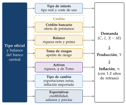
El canal del tipo de interés
Del tipo nominal al real: por la ecuación de Fisher, \(r_t\approx i_t-\mathbb{E}_t[\pi_{t+1}]\). Con precios rígidos, la inflación esperada apenas se mueve a corto plazo, así que subir el tipo nominal es subir el tipo real, y eso frena el gasto por 3 vías:
la inversión: la empresa invierte hasta que la productividad marginal del capital iguala su coste de uso, \(F_K(K^*)=r+\delta\) (con el precio del capital normalizado a 1); si sube \(r\), baja el capital deseado \(K^*\) y, con él, la inversión [ver tema 3.A.34];
el consumo, por la sustitución intertemporal: la ecuación de Euler del hogar, en logaritmos, \(\Delta\ln C_{t+1}\approx\frac{1}{\theta}\,(r_t-\rho)\), dice que con un tipo real más alto conviene consumir menos hoy y más mañana; tanto más cuanto mayor es la elasticidad de sustitución intertemporal, \(1/\theta\), que los datos sitúan baja [ver tema 3.A.29] [ver tema 3.A.33];
la vivienda y los bienes duraderos, los componentes más sensibles, porque el tipo entra en su coste de uso y en el del crédito con que se compran [ver tema 3.A.33].
La cadena: \(i\uparrow\ \Rightarrow\ r\uparrow\ \Rightarrow\ I,\ C^{\mathrm{dur}},\ C\downarrow\ \Rightarrow\ Y\downarrow\ \Rightarrow\ \pi\downarrow\).
Pensemos en una familia con una hipoteca de 150.000 euros a 25 años, a Euríbor más 1 punto. Con el Euríbor de diciembre de 2021 pagaba unos 530 euros al mes, y con el de octubre de 2023, unos 890, según un cálculo propio con los datos del BCE. Son 360 euros menos cada mes para todo lo demás, y la subida le llega por la cuota, no porque prefiera ahorrar.
El canal de los precios de los activos
El precio de las acciones: es el valor actual de los dividendos esperados. Si crecen a una tasa constante, \(\gamma_D\), el precio es \(P^A_t=D_{t+1}/(i_t+\text{prima}-\gamma_D)\): una subida del tipo, o de la prima de riesgo que la acompaña, lo baja. Lo mismo ocurre con el precio de la vivienda, que descuenta alquileres futuros.
La \(q\) de Tobin: el cociente entre el valor de mercado de la empresa y el coste de reponer su capital, \(q=P^A/(P_K\,K)\). La empresa invierte más cuanto mayor es \(q\): con \(q>1\), una máquina vale más en bolsa de lo que cuesta, y con \(q<1\) no compensa invertir [ver tema 3.A.34]. La cadena: \(i\uparrow\Rightarrow P^A\downarrow\Rightarrow q\downarrow\Rightarrow I\downarrow\). La inversión responde a la \(q\) marginal y la bolsa da la media; coinciden con rendimientos constantes a escala y competencia perfecta.8
El efecto riqueza: según la hipótesis del ciclo vital, el consumo depende de la renta laboral y de la riqueza, \(C=c_Y\,Y^L+c_W\,W\) (con \(c_Y\) y \(c_W\), locales, las propensiones a consumir de cada una). La cadena: \(i\uparrow\Rightarrow P^A,\ P^{V}\downarrow\Rightarrow W\downarrow\Rightarrow C\downarrow\), con \(P^V\) el precio de la vivienda [ver tema 3.A.33].
El reajuste de carteras de los monetaristas es la versión general de este canal: el tipo oficial mueve los rendimientos de todos los activos que compiten con el dinero [ver tema 3.A.35].
El canal del tipo de cambio
Con libre movilidad de capitales, se cumple la paridad no cubierta de intereses, \(i=i^*+\gamma E^e\), con \(E\) el tipo de cambio nominal directo (euros por dólar) y \(\gamma E^e\) la depreciación esperada. Si el BCE sube su tipo y la Reserva Federal no, el euro se aprecia hoy lo bastante para que se espere una depreciación que iguale los rendimientos [ver tema 3.B.14].
La apreciación baja el tipo de cambio real, \(e=E\,P^*/P\), y tiene 2 efectos:
bajan las exportaciones netas, \(X-M=\mathrm{XN}(e,\ldots)\) con \(\partial\,\mathrm{XN}/\partial e>0\), si se cumple la condición de Marshall-Lerner [ver tema 3.B.12];
baja la inflación importada: las importaciones se abaratan en euros. El traspaso del tipo de cambio a los precios es incompleto y depende de la moneda en que se facturan las importaciones, muy a menudo el dólar; es menor en una economía grande y poco abierta, como la zona del euro en su conjunto, que en cada uno de sus países por separado.
La cadena: \(i\uparrow\ \Rightarrow\ E\downarrow\ \Rightarrow\ e\downarrow\ \Rightarrow\ X-M\downarrow\ \text{y}\ P^M\downarrow\ \Rightarrow\ Y\downarrow,\ \pi\downarrow\). Siguiendo con la pyme exportadora: si el euro se aprecia frente al dólar, sus azulejos se encarecen en Estados Unidos y recibe menos pedidos.
El canal también funciona hacia fuera: la política de la Reserva Federal mueve los precios de los activos con riesgo y el crédito de todo el mundo, el ciclo financiero global; de ahí que se diga que, cuando Estados Unidos estornuda, el mundo se resfría. La economía abierta con 2 países está en el anexo C.
Los canales del crédito
Con fricciones financieras, la política no solo cambia el precio del crédito, sino también cuánto crédito se da y a quién. El tipo de un préstamo es el tipo sin riesgo más una prima de financiación externa, \(s\), que baja con la riqueza neta del prestatario, RN: \(i^{\text{préstamo}}=i+s(\mathrm{RN})\), con \(s'(\cdot)<0\) (II.3). La política mueve los 2 sumandos:
el canal del crédito bancario: la subida encarece la financiación de los bancos, y los que dependen más de los depósitos prestan menos; quien no tiene otra fuente de crédito, como las pymes, no puede sustituirlo. La cadena: \(i\uparrow\Rightarrow\) financiación de los bancos \(\uparrow\ \Rightarrow\) oferta de crédito \(\downarrow\ \Rightarrow I,\ C\downarrow\);
el canal del balance: la subida reduce el flujo de caja de los prestatarios endeudados a tipo variable y el valor de sus garantías; baja RN y el banco les cobra una prima mayor. La cadena: \(i\uparrow\Rightarrow\mathrm{RN}\downarrow\Rightarrow s\uparrow\Rightarrow I\downarrow\);
el canal de la toma de riesgos: con tipos bajos durante mucho tiempo, bancos e inversores buscan rentabilidad y aceptan más riesgo; al subir los tipos, el apetito se corta. Con el registro de crédito del Banco de España, los tipos bajos llevan a los bancos con menos capital a prestar a empresas más arriesgadas [ver tema 3.A.42].
Los 3 nacen de las fricciones financieras y se desarrollan en el apartado II.3.
El canal de las expectativas
Lo que el banco central hace hoy cambia lo que se espera de los tipos y de la inflación futuros, y actúa por 2 vías:
por la curva de tipos (4): si el público espera que los tipos sigan altos, suben hoy los tipos largos, aunque el tipo oficial no se mueva más;
por los precios: en la curva de Phillips neokeynesiana, \(\pi_t=\beta\,\mathbb{E}_t[\pi_{t+1}]+\kappa\,x_t+u_t\) (II.1), la inflación de hoy depende de la esperada. Si la subida es creíble, baja \(\mathbb{E}_t[\pi_{t+1}]\): los salarios y los precios se fijan pensando en el objetivo, y la inflación baja con menos pérdida de producción (una brecha \(x_t\) menos negativa) [ver tema 3.A.36].
La cadena: \(i\uparrow\) creíble \(\Rightarrow\ \mathbb{E}_t[\pi_{t+1}]\downarrow\) y \(\mathbb{E}_t[i_{t+k}]\uparrow\ \Rightarrow\) salarios y precios \(\downarrow\), tipos largos \(\uparrow\). Es el canal que hace prospectivo el modelo neokeynesiano (II.1) y el principal cuando los tipos están en su límite (III.2).
Los retardos: todos los canales tardan, porque los precios y los salarios se revisan poco a poco, la inversión se planea con tiempo y las deudas vencen o se revisan de forma escalonada. Por eso el banco central mira a la inflación prevista a 1 o 2 años, no a la de hoy.
Recapitulación: los canales del tipo de interés, de los activos y del tipo de cambio existen porque los precios son rígidos; los del crédito, porque hay fricciones financieras; el de las expectativas, porque el público mira hacia delante; y, con hogares distintos, se añade el de la renta y el empleo (II.4). La tabla 2 los resume y la figura 2 dibuja la cadena de cada uno.
| Canal | Cadena | Dónde se estudia |
|---|---|---|
| Tipo de interés | \(i\uparrow\Rightarrow r\uparrow\Rightarrow I,\ C^{\mathrm{dur}},\ C\downarrow\) | II.1; [ver tema 3.A.33], [ver tema 3.A.34] |
| \(q\) de Tobin | \(i\uparrow\Rightarrow\) acciones \(\downarrow\ \Rightarrow q\downarrow\ \Rightarrow I\downarrow\) | [ver tema 3.A.34] |
| Riqueza | \(i\uparrow\Rightarrow\) vivienda y acciones \(\downarrow\ \Rightarrow C\downarrow\) | [ver tema 3.A.33] |
| Tipo de cambio | \(i\uparrow\Rightarrow\) apreciación \(\Rightarrow X-M\downarrow\), precios de importación \(\downarrow\) | Anexo C; [ver tema 3.B.14] |
| Crédito bancario | \(i\uparrow\Rightarrow\) financiación de los bancos \(\uparrow\ \Rightarrow\) crédito \(\downarrow\) | II.3 |
| Balance | \(i\uparrow\Rightarrow\) flujo de caja y garantías \(\downarrow\ \Rightarrow\) prima \(\uparrow\ \Rightarrow I\downarrow\) | II.3 |
| Toma de riesgos | \(i\uparrow\Rightarrow\) menos búsqueda de rentabilidad \(\Rightarrow\) crédito al riesgo \(\downarrow\) | II.3; [ver tema 3.A.42] |
| Renta y empleo | \(i\uparrow\Rightarrow\) empleo \(\downarrow\ \Rightarrow C\downarrow\) de quien vive al día | II.4 |
| Expectativas | \(i\uparrow\) creíble \(\Rightarrow\pi^e\downarrow\ \Rightarrow\) salarios y precios \(\downarrow\) | III.2; [ver tema 3.A.36] |
Fuente: elaboración propia a partir de Bernanke y Gertler (1995), Ireland (2008), Boivin, Kiley y Mishkin (2010) y Mishkin (2021).
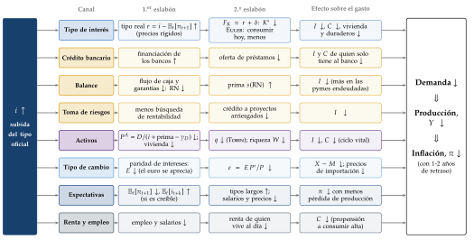
I.3. La transmisión en la zona del euro y en España
Los canales son los mismos en todas partes, pero su peso no. En la zona del euro, y más aún en España, lo deciden 3 rasgos: cómo se financian las empresas, a qué tipo están las hipotecas y qué parte del ahorro está en depósitos.
Su peso depende de la estructura financiera: las empresas de la zona del euro dependen más de los bancos que las de Estados Unidos, que se financian más en los mercados. Por eso aquí pesan más los canales del crédito y menos el de los precios de los activos. Cómo es hoy el sector bancario español, y cómo se regula y supervisa, es de otra exposición [ver tema 4.A.19].
Las subidas de 2022-2023 (gráfico 1): el BCE subió la facilidad de depósito 450 puntos básicos, del \(-0{,}50\) % al 4 %, y la transmisión fue desigual:
el crédito nuevo a las empresas se encareció unos 350 puntos básicos, casi lo mismo que el tipo oficial;
las hipotecas nuevas, algo más de 200, y los depósitos a plazo de los hogares, unos 300 en la zona del euro y 260 en España;
los depósitos a la vista apenas se movieron: del 0 % al 0,4 % en la zona del euro y al 0,2 % en España. Los bancos ganaron margen, y el ahorro de los hogares en depósitos apenas notó la subida.
El tipo variable cuenta: en España, donde predominan las hipotecas vivas a tipo variable, el tipo medio de las hipotecas vivas pasó del 1,2 % de junio de 2022 al 3,7 % de febrero de 2024; en el conjunto de la zona del euro, solo del 1,6 % al 2,5 %. Es el canal del balance de los hogares, más rápido en España; como en los últimos años la mayoría de las hipotecas nuevas se firman a tipo fijo o mixto, irá perdiendo fuerza a medida que se amorticen las antiguas.
También en las bajadas: entre junio de 2024 y junio de 2025 el BCE bajó la facilidad de depósito 200 puntos básicos; el crédito nuevo a empresas se abarató unos 150 y las hipotecas, menos de 50.
Una política única para economías distintas: la misma decisión llega con distinta fuerza a cada país, y si las primas de riesgo de uno se disparan, la transmisión se rompe en él; para eso están los instrumentos de protección de la transmisión (III.2) [ver tema 3.B.43].
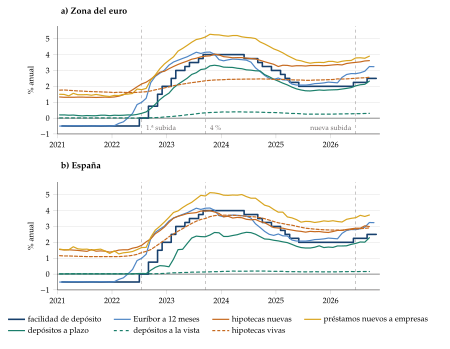
Recapitulación: en la zona del euro, y sobre todo en España, la política monetaria llega sobre todo por los bancos: deprisa al crédito a empresas y a las hipotecas a tipo variable, despacio a los depósitos. ¿Qué dicen los datos de la fuerza y del retraso del conjunto?
I.4. La evidencia empírica: efectos, retardos e identificación
Una vez trazados los caminos, toca medir cuánto mueve la política y con qué retraso. La conclusión adelantada: una subida inesperada de tipos baja la producción con forma de joroba y los precios después, y medirlo exige separar lo que decide el banco central de lo que responde a la economía.
El problema de identificación: el banco central reacciona a la economía. Si sube los tipos porque espera más inflación, los datos mostrarán tipos altos seguidos de inflación alta, y no por eso la subida la causa. Hay que aislar la parte de la política que no responde al estado de la economía: la perturbación monetaria, la \(\varepsilon_t\) de la regla de Taylor del modelo (II.1).
Los métodos, en orden histórico:
la historia y las regresiones: entre 1867 y 1960, en Estados Unidos, los cambios del dinero de origen monetario fueron seguidos por cambios de la producción en el mismo sentido [ver tema 3.A.5]. La ecuación de San Luis regresa la variación del PNB nominal sobre la del dinero y la del gasto público: cada dólar más de dinero sube el PNB nominal unos 5,8 dólares en un año, y el gasto no tiene efecto significativo. Pero el dinero también responde a la renta, y la regresión no lo distingue;
la narrativa: leyendo las actas de la Reserva Federal, C. D. Romer y Romer (1989) fechan 6 episodios de posguerra en los que decidió frenar la economía para bajar la inflación (el último, con Volcker en 1979); C. D. Romer y Romer (2004) limpian el tipo decidido de lo que la Reserva Federal preveía;
los vectores autorregresivos (VAR), en los que cada variable depende del pasado de todas: Sims (1992)9 y Christiano, Eichenbaum y Evans (1996) miden la política por el tipo de interés y suponen que la producción y los precios no reaccionan a ella en el mismo periodo;
la alta frecuencia: lo que se mueven los tipos de mercado en los 30 minutos alrededor de un anuncio solo puede deberse al anuncio. Gertler y Karadi (2015) lo usan en Estados Unidos, y Altavilla et al. (2019) y Jarociński y Karadi (2020) en la zona del euro; los segundos separan la sorpresa de política de la de información, cuando el anuncio revela lo que el banco central sabe de la economía.
Los resultados (gráfico 2):
a largo plazo, el crecimiento del dinero y la inflación van casi uno a uno, y la producción no depende de ellos;
a corto plazo, tras una subida inesperada, la producción cae poco a poco, toca fondo al cabo de varios trimestres y luego se recupera: tiene forma de joroba. Con la serie narrativa el efecto es mayor: la producción industrial cae un 4,3 % unos 2 años después de una subida de un punto;
los precios apenas se mueven al principio: con la serie narrativa no empiezan a bajar hasta pasados 22 meses, y el efecto máximo llega, de media, a los 29 meses, con mucha dispersión entre países. Las cosas de palacio, en efecto, van despacio.
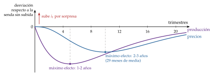
El rompecabezas de los precios (price puzzle): en los primeros VAR los precios subían tras una subida de tipos. No es que la subida cause inflación: el banco central sube los tipos cuando prevé inflación, y el VAR atribuye a la subida lo que el banco ya veía venir. Se corrige al tener en cuenta las previsiones del banco central y al separar las sorpresas de información.
Lo que se discute: la parte sistemática de la política, la que responde a la economía, es la que mueve casi todo el tipo de interés, y es la más difícil de medir: un cambio de regla cambia también las expectativas, como advierte la crítica de Lucas [ver tema 3.A.6]. Los métodos y una tabla de estimaciones están en el anexo B.
Recapitulación: la política monetaria convencional tiene efectos reales a corto plazo, llega por varios canales y tarda: más de un año en la producción y más de 2 en los precios. ¿Por qué tanto, y qué decide su fuerza? Es la pregunta del bloque siguiente.
II. Rigideces de precios, de salarios y fricciones financieras
Una vez vistos los canales y lo que tardan, pasamos a lo que los hace posibles. Es el corazón del título: las rigideces de precios y de salarios y las fricciones financieras.
Conclusión anticipada: basta que los precios no se ajusten todos a la vez para que el banco central, al mover el tipo nominal, mueva el tipo real y la demanda. Los salarios fijados en contratos alargan el efecto; las fricciones financieras lo amplifican, y las diferencias entre hogares cambian el canal principal: de la sustitución intertemporal a la renta y el empleo.
II.1. Rigideces de precios: el modelo neokeynesiano
a) Idea
Con precios flexibles, una subida del tipo nominal se traslada a los precios y el tipo real no cambia. Si los precios se revisan poco a poco, subir el tipo nominal es subir el tipo real, y eso frena la demanda. Es la versión moderna del canal del tipo de interés, ahora con agentes que optimizan y expectativas racionales.
Por qué son rígidos los precios, en 2 líneas [ver tema 3.A.7]:
cambiar un precio cuesta (costes de menú), y cerca del óptimo no cambiarlo apenas le cuesta a la empresa, mientras que la suma de esas pequeñas pérdidas tiene efectos grandes sobre la producción;
las rigideces reales lo amplían: si a cada empresa le importa su precio relativo, sube poco el suyo mientras los demás no suben.
Siguiendo con la pyme de azulejos: no cambia su tarifa cada mes, sino una o 2 veces al año; cuando el BCE sube los tipos, durante meses vende a los mismos precios y lo que ajusta son los pedidos y la producción.
b) Modelo
i) Supuestos
Un hogar representativo de vida infinita, con aversión relativa al riesgo \(\theta\) (la elasticidad de sustitución intertemporal es \(1/\theta\)) y factor de descuento \(\beta\).
Un continuo de empresas en competencia monopolística que revisan su precio a la Calvo: cada periodo, una empresa mantiene su precio con probabilidad \(\eta\), de modo que un precio dura de media \(1/(1-\eta)\) periodos.
Sin capital, sector público ni sector exterior; un banco central que fija el tipo nominal. Variables en logaritmos y en desviaciones del estado estacionario; \(x_t\) es la brecha de producción respecto a la natural, la que habría con precios flexibles.
ii) Desarrollo
El modelo se resume en 3 ecuaciones, las mismas que se derivan en el tema de la nueva economía keynesiana [ver tema 3.A.7]: la IS dinámica, que sale de la ecuación de Euler del hogar (las perturbaciones de demanda van dentro del tipo natural \(r^n_t\)); la curva de Phillips neokeynesiana, que sale de la fijación de precios a la Calvo; y la regla de Taylor, que cierra el modelo: \[x_t=\mathbb{E}_t[x_{t+1}]-\frac{1}{\theta}\big(i_t-\mathbb{E}_t[\pi_{t+1}]-r^n_t\big) \tag{5}\] \[\pi_t=\beta\,\mathbb{E}_t[\pi_{t+1}]+\kappa\,x_t+u_t \tag{6}\] \[i_t=\rho+\phi_\pi\,\pi_t+\phi_x\,x_t+\varepsilon_t \tag{7}\] con \(\kappa\) la pendiente (menor cuanto mayor es \(\eta\), cuanto más rígidos son los precios), \(u_t\) las perturbaciones de costes y \(\varepsilon_t\) la perturbación monetaria.10 Las 3 ecuaciones se cierran entre sí: la regla fija \(i_t\), la IS da \(x_t\) y la curva de Phillips da \(\pi_t\), que vuelve a la regla (figura 3).
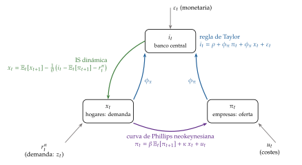
Fuente: elaboración propia a partir de Galí (2015, cap. 3).
La clave de la transmisión: resolviendo la IS hacia delante, la brecha de hoy depende de toda la senda esperada del tipo real frente al natural, \[x_t=-\frac{1}{\theta}\sum_{k\geq0}\mathbb{E}_t\big[i_{t+k}-\pi_{t+k+1}-r^n_{t+k}\big] \tag{8}\] Mover hoy el tipo importa poco si no cambia lo que se espera de los tipos futuros: es la puerta de la orientación de la política (III.2).11
Una subida inesperada de tipos, \(\varepsilon_t>0\) (gráfico 3, en el mismo plano y con los mismos valores que el de la nueva economía keynesiana [ver tema 3.A.7]): con precios rígidos sube el tipo real; por la IS cae la brecha, y por la curva de Phillips cae la inflación. En el plano \((x_t,\pi_t)\), la demanda agregada (la IS con la regla) se desplaza a la izquierda y la economía baja por la curva de Phillips.
Con números: si la perturbación persiste, \(\varepsilon_t=\rho_\varepsilon\varepsilon_{t-1}+\) una innovación (\(\rho_\varepsilon\), local), la solución es \[x_t=-(1-\beta\rho_\varepsilon)\,\Lambda\,\varepsilon_t,\qquad \pi_t=-\kappa\,\Lambda\,\varepsilon_t,\qquad \Lambda\equiv\frac{1}{(1-\beta\rho_\varepsilon)\big[\theta(1-\rho_\varepsilon)+\phi_x\big]+\kappa(\phi_\pi-\rho_\varepsilon)}>0 \tag{9}\] (\(\Lambda\), local; derivación en el anexo A). Con precios que duran un año y \(\rho_\varepsilon=0{,}5\), una perturbación de 1 punto anual sube el tipo real 0,52 puntos y baja la brecha un 0,26 % y la inflación anual 0,35 puntos; el tipo nominal sube solo 0,34 puntos, porque la regla responde a la caída de la inflación y de la brecha.
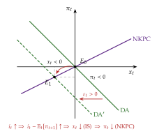
Fuente: elaboración propia a partir de Galí (2015, cap. 3), con \(\kappa=0{,}5\), \(\theta=1\), \(\phi_x=0{,}5\), \(\phi_\pi=1{,}5\) y una perturbación transitoria \(\varepsilon_t=1{,}125\). Representación aproximada: en sentido estricto, el modelo canónico no admite este plano; supone perturbaciones transitorias, \(\mathbb{E}_t[x_{t+1}]=\mathbb{E}_t[\pi_{t+1}]=0\); las salvedades se explican a continuación.
Por qué el modelo neokeynesiano se dibuja en el plano \((x_t,\pi_t)\), y con qué salvedades
En sentido estricto, no se puede: el modelo canónico es un sistema dinámico con expectativas. La brecha y la inflación de hoy dependen de toda la senda esperada de los tipos y de las perturbaciones (8), y esas expectativas son endógenas: no hay 2 curvas fijas que se corten, como en la oferta y la demanda agregadas de un modelo estático.
De dónde sale la representación: hacen falta 4 supuestos.
el modelo está linealizado alrededor de un estado estacionario con inflación nula, y las variables son desviaciones de él;
las perturbaciones siguen un proceso AR(1), \(\varepsilon_t=\rho_\varepsilon\varepsilon_{t-1}+\) una innovación (o son transitorias, \(\rho_\varepsilon=0\), como en el gráfico 3);
se toma la solución de variables de estado mínimas, proporcional a la perturbación, \(x_t=\psi_x\varepsilon_t\) y \(\pi_t=\psi_\pi\varepsilon_t\) (locales), la del anexo A;
y, con ella, las expectativas son proporcionales a los valores de hoy: \(\mathbb{E}_t[x_{t+1}]=\rho_\varepsilon x_t\) y \(\mathbb{E}_t[\pi_{t+1}]=\rho_\varepsilon\pi_t\).
Las 2 rectas: con esos supuestos, la curva de Phillips (6) queda \(\pi_t=\frac{\kappa}{1-\beta\rho_\varepsilon}\,x_t\), creciente, y la IS con la regla, \(\pi_t=-\frac{\theta(1-\rho_\varepsilon)+\phi_x}{\phi_\pi-\rho_\varepsilon}\,x_t-\frac{\varepsilon_t}{\phi_\pi-\rho_\varepsilon}\), decreciente: es la demanda agregada dinámica. Con \(\rho_\varepsilon=0\) salen las del gráfico, de pendientes \(\kappa\) y \(-(\theta+\phi_x)/\phi_\pi\).
Cómo se lee: cada punto es el equilibrio de un periodo, no un estado al que la economía llega y en el que se queda; después vuelve al origen a la tasa \(\rho_\varepsilon\). Y las pendientes dependen de la persistencia de la perturbación: otra perturbación, otras curvas. Las mismas salvedades valen para los demás gráficos de este tipo del tema.
iii) Implicaciones
El dinero no es neutral a corto plazo, pero no cambia la producción natural: cuando todos los precios se han revisado, solo quedan los precios.
Cuanto más rígidos los precios (\(\eta\) mayor, \(\kappa\) menor), más efecto sobre la producción y menos sobre la inflación.
El canal es el tipo real: la política llega al consumo solo por la sustitución intertemporal del hogar representativo.
Las expectativas lo son todo: una política más persistente es más contractiva, y puede serlo con un tipo nominal más bajo: con \(\rho_\varepsilon=0{,}8\), la inflación cae tanto que el tipo nominal baja 0,51 puntos mientras el real sube 0,22. El tipo nominal es un mal indicador del tono de la política.
Divina coincidencia: ante perturbaciones de demanda, si el tipo nominal sigue al natural, la inflación y la brecha son cero a la vez; ante las de costes, \(u_t\), hay un dilema. El resultado está en Goodfriend y King (1997) y Rotemberg y Woodford (1997); el nombre se lo pusieron Blanchard y Galí (2007) [ver tema 3.A.7].
c) Extensiones
Cómo se agregan las revisiones: con reglas que dependen del tiempo (Taylor, Calvo) la rigidez agregada es grande; con reglas que dependen del estado (la empresa cambia el precio cuando se aleja demasiado del óptimo), el efecto selección puede devolver casi la neutralidad; con empresas de muchos productos y cambios pequeños, el resultado vuelve a parecerse al de Calvo.
Inercia: con indexación a la inflación pasada la curva de Phillips es híbrida; con información que se actualiza despacio, la inflación también se retrasa.
Modelos medianos: con capital, hábitos, costes de ajuste de la inversión y salarios rígidos, Christiano, Eichenbaum y Evans (2005) y Smets y Wouters (2007) reproducen las respuestas de los VAR; son la base de los modelos de los bancos centrales.
d) Evidencia empírica
Los microdatos: en Estados Unidos la mitad de los precios de consumo dura menos de 4,3 meses contando las rebajas, y bastante más sin ellas. En la zona del euro cambia cada mes en torno al 8 % de los precios sin rebajas, y la frecuencia subió con la inflación de 2022 (gráfico 4, el mismo que en otro tema [ver tema 3.A.7]): señal de que la revisión también depende del estado.
Los datos agregados: el modelo puro da el efecto máximo en el primer periodo, y los VAR dan una joroba (I.4). Para reproducirla hacen falta más fricciones, sobre todo salarios rígidos.
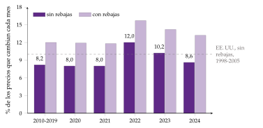
e) Valoración
A favor: une la optimización con las rigideces, explica por qué incluso la política anticipada tiene efectos reales y permite evaluarla con el bienestar.
En contra: toda la transmisión pasa por la sustitución intertemporal, que los datos sitúan baja [ver tema 3.A.33]; no hay joroba sin más rigideces; no hay bancos ni crédito, y el hogar es único. Son las 3 piezas que siguen: los salarios, las fricciones financieras y los hogares distintos.
II.2. Rigideces de salarios: los contratos escalonados
a) Idea
De los precios pasamos a los salarios, que se revisan aún menos: se fijan en contratos, a menudo para varios años. Es la respuesta keynesiana a la proposición de inefectividad (I.1): los salarios nominales se fijan antes de conocer las perturbaciones y no se renegocian todos a la vez, así que la política tiene efectos reales aunque las expectativas sean racionales.12
Siguiendo con la pyme: sus trabajadores tienen un convenio de 3 años firmado antes de las subidas de 2022; el salario no se ajusta del todo hasta la renovación.
b) Modelo
i) Supuestos
Variables en logaritmos; expectativas racionales; demanda agregada \(y_t=m_t-p_t\), con \(m_t\) el dinero (velocidad normalizada).
Los salarios se fijan en contratos de 2 periodos y cada periodo firma la mitad de los trabajadores: los contratos están escalonados. El precio es la media de los salarios vigentes (con un margen constante, normalizado a cero).
El salario que se desea fijar sube con los precios y con la actividad: \(p^*_t=p_t+a\,y_t\), con \(0<a\leq1\). Una \(a\) pequeña es una rigidez real.13
ii) Desarrollo
Fischer: salarios predeterminados. El contrato firmado en \(t-j\) fija un salario para cada periodo, el que se espera que iguale al deseado, \(w^j_t=\mathbb{E}_{t-j}[p^*_t]\), \(j=1,2\). La oferta agregada cierra el modelo: el precio es la media de los 2 salarios, \(p_t=\tfrac12\big(w^1_t+w^2_t\big)\). Resolviendo (anexo A): \[y_t=\big(m_t-\mathbb{E}_{t-1}[m_t]\big)+\frac{1}{1+a}\big(\mathbb{E}_{t-1}[m_t]-\mathbb{E}_{t-2}[m_t]\big) \tag{10}\] El primer término es la sorpresa del periodo, como en Lucas. El segundo es nuevo: lo que se supo en \(t-1\), después de firmar los contratos de \(t-2\), también mueve la producción.14
Taylor: salarios fijos durante el contrato. El salario del contrato, \(w^c_t\), es el mismo los 2 periodos y mira a los 2: \(w^c_t=\tfrac12\big(p^*_t+\mathbb{E}_t[p^*_{t+1}]\big)\), con \(p_t=\tfrac12\big(w^c_t+w^c_{t-1}\big)\). Si el dinero sigue un paseo aleatorio, la solución es \[w^c_t=\rho_w\,w^c_{t-1}+(1-\rho_w)\,m_t,\qquad \rho_w=\frac{1-\sqrt{a}}{1+\sqrt{a}} \tag{11}\] con \(\rho_w\) la persistencia (local). Cada contrato nuevo se ajusta solo en parte al dinero, porque la mitad de los salarios sigue fijada por el contrato anterior. Tras una subida permanente del dinero de 1 punto, la producción es \(y_k=\tfrac12(1+\rho_w)\rho_w^{\,k}\).
Cómo se llega a la forma de cada curva (gráfico 5): en \(t=0\) el dinero sube 1 de forma permanente y por sorpresa, y como \(y_t=m_t-p_t\), la producción es lo que el nivel de precios se queda por debajo del dinero.
Con Fischer, un escalón. En el periodo 0 los 2 contratos vigentes se firmaron antes de la sorpresa: el precio no se mueve y \(y_0=1\), la sorpresa entera. En el periodo 1 la mitad que firmó en el 0 ya conoce la subida, pero sube su salario poco (el nivel de precios sube solo \(a/(1+a)\)), porque su salario deseado depende del nivel de precios, que la otra mitad mantiene bajo: \(y_1=1/(1+a)\approx0{,}91\). En el periodo 2 todos los contratos se firmaron después de la sorpresa, el precio sube 1 y \(y_2=0\). Por eso la curva cae de golpe a cero al acabar el contrato más largo.
Con Taylor, una caída geométrica. En el periodo 0 la mitad que firma ya conoce la subida, pero fija su salario mirando el de la otra mitad, que sigue con el contrato viejo, y solo lo sube \(1-\rho_w\): el precio sube la mitad de eso y \(y_0=\tfrac12(1+\rho_w)\approx0{,}76\). Cada periodo, la mitad que renueva cierra una fracción \(1-\rho_w\) de lo que falta, por (11), así que la distancia entre el dinero y los salarios, y con ella la producción, se multiplica por \(\rho_w\): 0,76, 0,40, 0,21… Es una curva que nunca llega del todo a cero.15
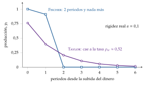
Fuente: elaboración propia a partir de Fischer (1977), Taylor (1980) y D. Romer (2019, cap. 7). Contratos de 2 periodos y \(a=0{,}1\).
iii) Implicaciones
La política sistemática estabiliza, aunque las expectativas sean racionales: una regla que responde a lo ocurrido en \(t-1\) cambia \(m_t\) después de firmados los contratos de \(t-2\), y por (10) mueve \(y_t\). El banco central no sabe más que el público: puede actuar después. Lo que daba la inefectividad era la flexibilidad, no las expectativas racionales [ver tema 3.A.6].
Persistencia: con Fischer, el efecto dura lo que el contrato más largo (con \(a=0{,}1\): 1 y 0,91, y luego nada); con Taylor, cada grupo mira el salario del otro para no quedarse atrás y, con rigidez real (\(a\) pequeña, \(\rho_w\) grande), el ajuste es lento: con \(a=0{,}1\), \(\rho_w\approx0{,}52\) y la producción es 0,76, 0,40, 0,21, 0,11… El efecto dura mucho más que los contratos (gráfico 5).
Inercia: el nivel de precios se mueve despacio porque cada contrato mira a los demás. La rigidez real amplía la nominal.
c) Extensiones
De Taylor a Calvo: Calvo (1983) cambia la duración fija por una probabilidad de revisar; es la base de la curva de Phillips neokeynesiana (6).
Salarios nominales a la Calvo: hay 2 curvas de Phillips, de precios y de salarios, y el salario real no puede saltar a su nivel natural; estabilizar solo la inflación de precios ya no es óptimo [ver tema 3.A.7].
Salarios reales rígidos: si el salario real se ajusta solo en parte, se rompe la divina coincidencia y la inflación gana inercia; con búsqueda y emparejamiento, el mismo resultado se expresa en paro [ver tema 3.A.26] [ver tema 3.A.28].
¿Por qué escalonar? ¿Y por qué no indexar? El escalonamiento se sostiene si las perturbaciones son distintas o si conviene esperar a ver qué hacen los demás; la indexación óptima es parcial, porque aísla de las perturbaciones monetarias pero empeora las reales.
Cómo se revisan los precios y los salarios: Fischer, Taylor y Calvo (para consultar; no se canta):
Para qué nacen los contratos escalonados: los 2 primeros modelos responden a la proposición de inefectividad de Sargent y Wallace (1975): con expectativas racionales, la política monetaria sistemática no tendría efectos reales [ver tema 3.A.6].
Fischer (1977):
los contratos duran 2 periodos y se firman por mitades;
el salario de cada periodo se fija al firmar, con lo que se espera entonces: \(w^j_t=\mathbb{E}_{t-j}[p^*_t]\), y puede ser distinto en cada periodo del contrato;
el banco central puede reaccionar a lo que pasa después de firmados los contratos y estabilizar la producción, aunque las expectativas sean racionales.
Taylor (1979, 1980):
el salario queda fijo durante todo el contrato y las revisiones no están sincronizadas;
cada empresa que revisa mira el salario de las que no revisan;
los efectos de la política monetaria duran más que los propios contratos, aunque al final se ajustan los precios.
Lo que muestran los 2: expectativas racionales y política eficaz son compatibles; lo que da la neutralidad es la flexibilidad de los precios, no las expectativas.
Por qué los superó la regla de Calvo (1983), la de los modelos actuales:
no tiene memoria: cada empresa revisa con la misma probabilidad, \(1-\eta\), haga el tiempo que haga, así que no hace falta seguir a cada cohorte de contratos: todo lo que importa del pasado está en el nivel de precios del periodo anterior;
sale de optimizar: la empresa que revisa elige el precio que maximiza el valor esperado de sus beneficios mientras dure, dentro de una economía de hogares que maximizan su utilidad; las reglas de Fischer y de Taylor se suponían;
se agrega en una ecuación: la curva de Phillips neokeynesiana (6), con una pendiente que depende de parámetros estructurales; con contratos de duración fija, hay que llevar tantas variables como cohortes;
da el coste de la inflación: la inflación dispersa los precios relativos, y esa dispersión justifica que el banco central se preocupe por ella; el coste cuadrático de ajustar los precios de Rotemberg (1982) da la misma curva a primer orden, pero todas las empresas cambian a la vez, poco a poco, y no hay dispersión;
su precio: la frecuencia de los cambios es exógena y no sube con la inflación, como sí predicen las reglas dependientes del estado (II.1).

d) Evidencia empírica
En Europa, las empresas mantienen los salarios sin cambios unos 15 meses de media, frente a unos 10 los precios, y concentran los cambios en un mes, casi siempre enero.
Los salarios nominales casi nunca bajan: en muchos países, la distribución de sus cambios tiene un pico en cero y pocas bajadas. Esa rigidez a la baja ayuda a explicar el paro de la periferia del euro tras 2008, sin tipo de cambio propio con el que ajustar, y es una razón para no apuntar a una inflación nula [ver tema 3.A.41].
En los modelos medianos, los salarios rígidos son la fricción más importante para reproducir la respuesta a la política monetaria.
e) Valoración
A favor: fueron el puente entre las expectativas racionales y las rigideces, explican la persistencia y son la base de la fijación de precios de los modelos actuales.
En contra: los contratos son exógenos. Si la rigidez cuesta producción, ¿por qué no se indexan o se hacen contingentes? La duración y el escalonamiento se suponen, no se explican.
Recapitulación: con precios y salarios rígidos, la política llega a la demanda por el tipo real y tarda en llegar a los precios. Pero el modelo sigue sin bancos ni crédito, y fue el crédito el que hundió la economía en 2008.
II.3. Fricciones financieras: los canales del crédito
Los modelos anteriores suponen mercados financieros perfectos: se cumple el teorema de Modigliani y Miller, y cómo se financie una empresa no importa [ver tema 3.A.34].1617 Con información asimétrica sí importa [ver tema 3.A.13].
Conclusión anticipada: el coste del crédito depende del patrimonio del prestatario y del capital de los bancos. La política monetaria mueve ese patrimonio y, con él, la prima que se paga por el crédito: abre canales propios y amplifica los demás.
El fundamento: el prestamista no ve bien la calidad de los proyectos ni el esfuerzo del prestatario. Puede preferir racionar el crédito antes que subir el tipo, que atraería a los prestatarios más arriesgados; y si comprobar los resultados de un proyecto fallido le cuesta, exige una prima de financiación externa que baja cuanto mayor es el patrimonio del prestatario.
Un precedente histórico: Bernanke (1983)18 explicó la profundidad de la Gran Depresión por las quiebras bancarias, que destruyeron información y relaciones de crédito, no solo dinero [ver tema 3.A.5].
El canal del crédito bancario: si para los bancos los préstamos y los bonos no son sustitutos perfectos, ni para las empresas los préstamos y otras fuentes de financiación, la política monetaria mueve también la oferta de crédito: una subida encarece la financiación de los bancos, los que dependen más de los depósitos prestan menos, y las empresas que solo pueden pedir a un banco, como las pymes, no encuentran sustituto. Lo anticiparon Blinder y Stiglitz (1983).19
Actúa por la oferta de préstamos de los bancos, no por el multiplicador del dinero: los bancos no prestan las reservas, y los préstamos crean los depósitos [ver tema 3.A.36].
Evidencia: en Estados Unidos, los bancos pequeños y con balances menos líquidos son los que más recortan el crédito tras una subida; en España, con las solicitudes de préstamo del registro de crédito, la subida reduce sobre todo las concesiones de los bancos con menos capital o liquidez, y las empresas rechazadas no consiguen el crédito en otro banco.
El canal del balance: la política mueve también el patrimonio de los prestatarios, y con él la prima que pagan. Es el acelerador financiero, que se cuenta como un modelo.
a) Idea
¿Por qué una subida de un cuarto de punto puede tener efectos grandes y duraderos? Porque el patrimonio de los prestatarios y la actividad se refuerzan entre sí: es el acelerador financiero.
b) Modelo
i) Supuestos
El modelo neokeynesiano con capital; los empresarios compran capital, de precio \(q_t\), con su riqueza neta, RN, y con deuda; la quiebra es posible y comprobar los resultados le cuesta al prestamista; los contratos de deuda son óptimos.
ii) Desarrollo
La rentabilidad esperada del capital es el tipo sin riesgo por una prima que baja cuanto mayor es la parte que la empresa financia con su patrimonio,
\[\mathbb{E}_t\left[R^K_{t+1}\right]=s\left(\frac{\mathrm{RN}_{t+1}}{q_t\,K_{t+1}}\right)R_{t+1},\qquad s'(\cdot)<0\tag{12}\]
con \(R\) y \(R^K\) los rendimientos brutos sin riesgo y del capital, y \(s(\cdot)\) la prima [ver tema 3.A.34]. Gráficamente, el coste de los fondos es plano al tipo sin riesgo mientras la empresa invierte con su riqueza neta y sube después.
La transmisión: una subida de tipos golpea 2 veces (gráfico 7, en el mismo plano y con los mismos valores que el de la inversión [ver tema 3.A.34]). Sube el tipo sin riesgo, el tramo plano (\(r\) a \(r'\) en el gráfico); y además cae RN (a RN\('\)): suben los intereses de la deuda a tipo variable, bajan los flujos de caja y cae el valor de los activos que sirven de garantía, \(q_t\). La prima sube y la inversión de la empresa cae de \(I_0\) a \(I_1\), más que con la subida del tipo sola. Con una bajada, al revés: \[\downarrow i\ \Rightarrow\ \uparrow\text{flujo de caja},\ \uparrow\text{garantías},\ \uparrow P\text{ no anticipado}\ \Rightarrow\ \uparrow\mathrm{RN}\ \Rightarrow\ \downarrow s(\cdot)\ \Rightarrow\ \uparrow I,\ \uparrow C\] donde un nivel de precios mayor de lo esperado reduce el valor real de las deudas en nominal.
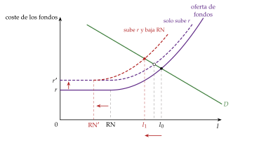
iii) Implicaciones
Amplificación y persistencia: la inversión y la producción responden más y durante más tiempo, porque la riqueza neta tarda en reconstruirse (figura 4, la misma que en otro tema [ver tema 3.A.42]).
Asimetría: el efecto es mayor cuando el patrimonio es escaso, en las recesiones y en las empresas pequeñas.
Deuda y deflación: con deudas en nominal, la deflación sube su valor real y vuelve a encarecer el crédito: la deflación por deudas de Fisher (1933) [ver tema 3.A.41].
Siguiendo con la pyme: con menos pedidos y un local que vale menos como garantía, el banco le pide más por el mismo crédito justo cuando más lo necesita. Es lo que recoge el dicho de que el banco te presta el paraguas cuando hace sol y te lo quita cuando llueve: el crédito se retira justo en la recesión.
c) Extensiones
Las garantías: si se presta contra el valor de los activos, una caída de su precio recorta el crédito, obliga a vender y vuelve a bajar el precio; es la teoría del ciclo de Kiyotaki y Moore (1997), que se estudia con el ciclo financiero [ver tema 3.A.42]. Las ventas forzosas de muchos a la vez, a precios por debajo del valor fundamental, son otra amplificación, distinta del acelerador.
El capital de los bancos: si un banco solo puede endeudarse hasta un múltiplo de su capital, sus pérdidas encogen el crédito a toda la economía y suben los diferenciales; el tipo oficial pierde fuerza y el banco central puede prestar o comprar activos en su lugar: es el puente con las compras de activos (III.2). Cúrdia y Woodford (2010) añaden a la regla de Taylor el diferencial de crédito.
La toma de riesgos: con tipos bajos durante mucho tiempo, los bancos relajan sus criterios; en España, los bancos con menos capital prestaron más a empresas arriesgadas.

d) Evidencia empírica
Tras una subida de tipos, las ventas y las existencias de las empresas pequeñas, más dependientes de los bancos, caen bastante más que las de las grandes [ver tema 3.A.34].
Una subida sorpresa del tipo oficial sube los diferenciales del crédito, algo que el modelo sin fricciones no predice.
e) Valoración
A favor: explica la amplificación que le faltaba al modelo, por qué la política es más potente en las recesiones con mucha deuda y por qué la salud de los bancos decide cuánto llega.
En contra: linealizados, estos modelos pierden la no linealidad de las crisis y explican mejor la caída que el auge del crédito que la prepara; el ciclo financiero como teoría del ciclo es de otro tema [ver tema 3.A.42].
Recapitulación: el crédito abre canales propios y amplifica los demás. Pero el modelo sigue teniendo un único hogar, y la política no llega igual a todos.
II.4. Hogares distintos: el canal redistributivo
a) Idea
En el modelo canónico, la subida de tipos actúa casi solo por la sustitución intertemporal del hogar representativo. Pero la elasticidad de sustitución intertemporal estimada es baja [ver tema 3.A.33], y muchos hogares viven al día (hand-to-mouth): en Estados Unidos, en torno a un tercio, y la mayoría de ellos tiene riqueza, pero ilíquida, como la vivienda o un plan de pensiones. A estos hogares el tipo les llega por la renta y el empleo.
Volvamos a nuestra familia: con hipoteca variable y sin ahorros, la subida le llega por la cuota y, si se pierde un empleo, por la renta; apenas por la sustitución intertemporal.
b) Modelo
i) Supuestos
Los modelos neokeynesianos con agentes heterogéneos (HANK) sustituyen el hogar representativo por muchos hogares que difieren en renta, riqueza y liquidez, sufren perturbaciones individuales que no pueden asegurar y no pueden endeudarse sin límite; tienen un activo líquido y otro ilíquido más rentable [ver tema 3.A.29]. El resto, como en el modelo canónico.
ii) Desarrollo
La respuesta del consumo a un cambio de tipos se descompone en un efecto directo, el del tipo con las rentas dadas, y unos efectos indirectos, los que llegan en equilibrio general por el empleo, los salarios y los impuestos: \[\mathrm{d}C_0=\underbrace{\sum_{t\geq0}\frac{\partial C_0}{\partial r_t}\,\mathrm{d}r_t}_{\text{directo}}+\underbrace{\sum_{t\geq0}\left(\frac{\partial C_0}{\partial (wL)_t}\,\mathrm{d}(wL)_t+\frac{\partial C_0}{\partial T_t}\,\mathrm{d}T_t\right)}_{\text{indirectos}} \tag{13}\] con \((wL)_t\) la renta del trabajo y \(T_t\) los impuestos netos de transferencias.
El resultado: con un hogar representativo, casi toda la respuesta es directa; en el HANK, los efectos directos son pequeños y los indirectos, la mayor parte, en torno a 4 de cada 5 euros, porque los hogares sin liquidez gastan lo que ganan (gráfico 8).
El canal redistributivo: la política reparte ganancias y pérdidas, y como quienes ganan y quienes pierden tienen propensiones a consumir distintas, el reparto mueve el consumo agregado:
por la renta: el empleo que se pierde con una subida es sobre todo de rentas bajas, con propensión alta;
por la inflación (efecto Fisher): una inflación menor de lo esperado pasa riqueza de los deudores en nominal a los acreedores;
por la exposición a los tipos: ganan quienes tienen activos que se renuevan pronto, como los depósitos, y pierden quienes tienen deudas a tipo variable.
La versión sencilla: con 2 tipos de hogares, una parte que consume su renta y el resto que optimiza (TANK), la política se amplifica si la renta de los que viven al día es más sensible al ciclo que la media.
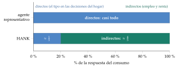
Fuente: elaboración propia a partir de Kaplan, Moll y Violante (2018); cifras redondeadas.
iii) Implicaciones
La política actúa sobre todo por la renta y el empleo, y su fuerza depende de la propensión marginal a consumir y del reparto de la deuda: con muchas hipotecas a tipo variable, como en España, el canal de la exposición a los tipos es más fuerte [ver tema 3.A.33].
La política fiscal importa para la monetaria: quién paga los intereses de la deuda pública cuando suben los tipos cambia el efecto sobre el consumo [ver tema 3.A.40].
Las promesas lejanas pesan menos: con riesgo de paro y límites al endeudamiento, los hogares descuentan el futuro con más cautela y se modera la paradoja de la orientación (III.2).
La política monetaria redistribuye, pero no es el instrumento para redistribuir: para eso está la fiscal.
c) Extensiones
La cruz keynesiana intertemporal lleva la cruz keynesiana a muchos periodos con las propensiones a consumir que se observan, y une así la política monetaria con la fiscal [ver tema 3.A.40].
d) Evidencia empírica
Con datos administrativos de Noruega, los efectos indirectos crecen con el tiempo y acaban dominando, y los hogares más endeudados son los que más recortan su consumo tras una subida.
En el Reino Unido y Estados Unidos, los hogares con hipoteca y los inquilinos ajustan su gasto tras un cambio de tipos; los propietarios sin deudas, apenas.
e) Valoración
A favor: encajan con los microdatos (sustitución intertemporal débil, propensiones a consumir altas) y unen la política monetaria, la fiscal y la distribución.
En contra: son difíciles de resolver y sus resultados dependen de cómo se calibre la distribución de la liquidez.
Recapitulación del bloque: las rigideces de precios y salarios explican por qué la política mueve la demanda; las fricciones financieras y los hogares distintos, con qué fuerza y a quién llega. Todo descansa en que el banco central pueda mover el tipo real. ¿Y si el nominal ya no puede bajar más?
III. Los mecanismos de transmisión de la política monetaria no convencional
Todo lo anterior supone que el banco central puede mover el tipo real moviendo el nominal. Pasamos ahora a lo que ocurre cuando ya no puede bajarlo, o cuando la transmisión se rompe.
Conclusión anticipada: el modelo neokeynesiano con el límite inferior explica por qué la economía puede caer en una espiral deflacionista y señala las salidas: bajar el propio límite, subir la inflación esperada con promesas creíbles y bajar las primas que separan el tipo oficial del que pagan hogares y empresas. Esas salidas son los canales de la política no convencional (las expectativas, el reequilibrio de carteras, la liquidez, el crédito y el tipo de cambio). Funcionaron, aunque con menos precisión que el tipo oficial, y deshacerlas ha movido los mercados menos que hacerlas.
El catálogo de los instrumentos pertenece al diseño de la política [ver tema 3.A.36], y su eficacia agregada desde 2008, con las cifras de los balances, a otra exposición [ver tema 3.A.40]. Aquí interesa por qué canales actúan.
III.1. El límite inferior de los tipos de interés
El problema: el efectivo rinde un 0 % nominal, y nadie aceptará un depósito o un bono con un rendimiento claramente negativo si puede guardar billetes, salvo lo que cuesta guardarlos y asegurarlos [ver tema 3.A.35]. El tipo nominal tiene un límite inferior efectivo, \(i^{\mathrm{ELB}}\) (ZLB, zero lower bound; ELB, effective lower bound, cuando es algo negativo), y con él el tipo real tiene un suelo: \(r_t\geq i^{\mathrm{ELB}}-\mathbb{E}_t[\pi_{t+1}]\).
No es una curiosidad: la Reserva Federal tuvo su tipo en el 0-0,25 % de diciembre de 2008 a diciembre de 2015 y de marzo de 2020 a marzo de 2022, y el BCE mantuvo negativo el tipo de la facilidad de depósito entre junio de 2014 y julio de 2022, con un mínimo del \(-0{,}50\) %.
Por qué se llegó al límite: porque el tipo natural, el que iguala el ahorro y la inversión con pleno empleo, lleva 30 años cayendo. Es la tesis del estancamiento secular (secular stagnation) de Summers, que Blanchard matiza; su desarrollo, y lo que pide a la política fiscal, es de otra exposición [ver tema 3.A.40].
Con el tipo natural por debajo del suelo, el banco central ya no puede cerrar la brecha bajando el tipo. Qué pasa entonces, y qué puede hacer, lo dice el modelo neokeynesiano ampliado con el límite (III.2).
El debate entre Summers y Blanchard sobre el estancamiento secular (para consultar; no se canta):
La idea: Hansen (1939) temió que, con una población que crecía menos y sin grandes inventos, la inversión no bastara para absorber el ahorro de pleno empleo. Lawrence Summers la recuperó en noviembre de 2013 con otro argumento: si el tipo real que iguala el ahorro y la inversión con pleno empleo es negativo y está por debajo del suelo, \(i^{\mathrm{ELB}}-\pi^e\), el banco central no puede llegar a él, sobra ahorro y lo que se ajusta es la renta, que cae hasta que el ahorro baja al nivel de la inversión (gráfico 9).
Por qué cae el tipo natural:
sube el ahorro deseado: el envejecimiento y la menor natalidad, el ahorro por precaución ante la incertidumbre, la desigualdad (los ricos ahorran más) y la demanda de activos seguros de los países emergentes;
baja la inversión deseada: crece menos la población y la productividad, los bienes de capital son más baratos, la economía digital necesita poco capital físico y la histéresis de las recesiones deprime los animal spirits.
Rachel y Summers (2019) estiman que el tipo neutral de las economías avanzadas cayó al menos 300 puntos básicos en una generación, y que sin el aumento de la deuda pública habría caído aún más. Las estimaciones del tipo natural lo confirman (gráfico 10).
Los 2 umbrales de Blanchard: al caer durante 30 años, el tipo natural cruzó 2 umbrales:
quedó por debajo de la tasa de crecimiento, \(r<\gamma_Y\): la ratio de deuda pública puede bajar sola, sin subir impuestos, y la deuda cuesta menos de lo que se creía [ver tema 3.A.39];
quedó tan bajo que, a veces, el banco central no podía bajar el tipo real lo bastante: es el límite inferior. Por eso la política fiscal debe tener un papel mayor en la estabilización.
Blanchard prefiere hablar de una «demanda privada estructuralmente débil», aunque reconoce que el término de Hansen y Summers se ha impuesto.
El debate tras la inflación: desde 2022 los tipos reales han subido. En 2023, Summers sostuvo que la era del estancamiento secular había terminado (más deuda pública, más inversión en la transición energética y en defensa), y Blanchard, que no, porque las fuerzas de fondo, el envejecimiento y la poca inversión, siguen ahí y los tipos volverán a bajar cuando pase la inflación. Si tiene razón Blanchard, el límite inferior volverá a apretar y lo que sigue no es historia, sino la caja de herramientas de la próxima recesión.
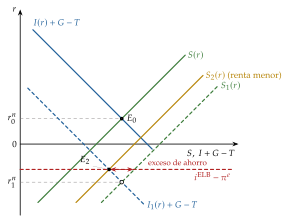
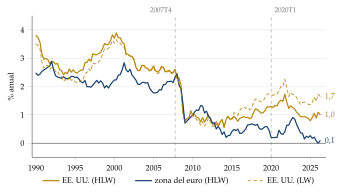
III.2. El modelo neokeynesiano en el límite inferior
a) Idea
Si una perturbación lleva el tipo natural por debajo del suelo, el banco central no puede seguirlo: el tipo real queda demasiado alto, cae la demanda, cae la inflación, cae la inflación esperada y el tipo real sube todavía más. Es el riesgo de espiral deflacionista [ver tema 3.A.41].
No es exactamente la trampa de la liquidez de Keynes [ver tema 3.A.4]: allí más dinero no bajaba el tipo; aquí el tipo ya está en su suelo, y lo que importa son las expectativas.
Volvamos a nuestra familia: entre 2016 y 2021 el Euríbor a 12 meses estuvo por debajo de cero, y su cuota bajó sin que el BCE tocara el tipo a un día: lo bajaron las expectativas de tipos y las compras de deuda. El modelo explica por qué.
b) Modelo
i) Supuestos
Las 3 ecuaciones del modelo canónico (II.1), con 2 cambios:
la regla de Taylor tiene un suelo: \(i_t=\max\big\{i^{\mathrm{ELB}},\ \rho+\phi_\pi\pi_t+\phi_x x_t\big\}\);
hogares y empresas no se financian al tipo oficial, sino a ese tipo más una prima, \(\omega_t\) (por plazo, de riesgo o de crédito), que es nula en el modelo canónico: en la IS dinámica, \(i_t\) pasa a ser \(i_t+\omega_t\).
La perturbación: el tipo natural cae a \(r^n_L\), tan negativo que \(r^n_L-\omega_L<i^{\mathrm{ELB}}\), y cada periodo sigue bajo con probabilidad \(p\) (y vuelve para siempre a la normalidad con \(1-p\)). Cuando vuelve, el banco central sigue su regla y la economía está en el estado estacionario: \(x=\pi=0\).
Mientras dura la perturbación, la brecha y la inflación son constantes, \(x_L\) y \(\pi_L\), así que \(\mathbb{E}_t[x_{t+1}]=p\,x_L\) y \(\mathbb{E}_t[\pi_{t+1}]=p\,\pi_L\). (Es la versión con 2 estados de los supuestos que permiten dibujar el modelo en el plano \((x_t,\pi_t)\), apartado II.1.)
ii) Desarrollo
Paso 1, la oferta: la curva de Phillips (6) en el estado bajo, \(\pi_L=\beta p\,\pi_L+\kappa\,x_L\), da una recta creciente: \[\pi_L=\frac{\kappa}{1-\beta p}\,x_L\]
Paso 2, la demanda en el límite: con \(i_t=i^{\mathrm{ELB}}\), la IS dinámica (5) da \(x_L=p\,x_L-\frac1\theta\big(i^{\mathrm{ELB}}+\omega_L-p\,\pi_L-r^n_L\big)\), es decir, \[\pi_L=\frac{\theta(1-p)}{p}\,x_L-\frac{r^n_L-\omega_L-i^{\mathrm{ELB}}}{p}\] también creciente: con menos inflación hoy se espera menos inflación mañana, sube el tipo real y cae la demanda. Por encima del límite, la regla hace que la demanda tenga pendiente negativa, como en el gráfico 3; la demanda agregada tiene un codo donde la regla llevaría el tipo al suelo.
Paso 3, el equilibrio: igualando las 2 rectas,
\[x_L=\frac{(1-\beta p)\big(r^n_L-\omega_L-i^{\mathrm{ELB}}\big)}{\theta(1-p)(1-\beta p)-p\,\kappa}<0,\qquad \pi_L=\frac{\kappa}{1-\beta p}\,x_L<0\tag{14}\]
siempre que la demanda sea más inclinada que la oferta, \(\theta(1-p)(1-\beta p)>p\,\kappa\), la condición para que haya un equilibrio único.
Con números: con \(\theta=1\), \(\beta=0{,}99\), \(\kappa=0{,}05\) y \(p=0{,}7\) (en trimestres), una caída del tipo natural que lo deje 1 punto anual por debajo del suelo, que sin límite el banco central compensaría por completo, deja una brecha del \(-1{,}3\) % y una inflación 0,9 puntos menor. Con \(\kappa=0{,}1\), precios más flexibles, la brecha llega al \(-3{,}5\) %.
En el plano \((x_t,\pi_t)\) (gráfico 11): cae el tipo natural, la demanda se desplaza a la izquierda y el codo queda por encima de la curva de Phillips; el equilibrio pasa a la rama del límite, \(E_0\), con brecha e inflación negativas, peores que las que habría si el banco central pudiera seguir su regla. Las políticas no convencionales desplazan esa rama a la derecha, hasta \(E_1\).
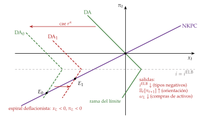
Fuente: elaboración propia a partir de Eggertsson y Woodford (2003), Eggertsson (2011) y Galí (2015); pendientes ilustrativas. Representación aproximada: en sentido estricto, el modelo no admite este plano; supone una perturbación con 2 estados, que persiste con probabilidad \(p\), y la solución constante mientras dura, de modo que las expectativas son proporcionales a los valores de hoy (las salvedades, en el apartado II.1).
iii) Implicaciones de política: los canales no convencionales
Las paradojas del límite: la brecha crece si los precios se vuelven más flexibles (\(\kappa\) mayor, denominador de (14) menor), porque la deflación es más rápida y sube más el tipo real: es la paradoja de la flexibilidad. Y cuanto más persistente es la perturbación (\(p\) mayor), mayor es la caída, que puede no tener fondo.
La ecuación (14) dice también qué puede hacer el banco central: mover alguno de los 3 términos del numerador o la inflación esperada. Cada salida es un canal no convencional.
Bajar el suelo: los tipos negativos:
Como el límite efectivo está algo por debajo de cero, el BCE pudo llevar la facilidad de depósito al \(-0{,}50\) %: baja \(i^{\mathrm{ELB}}\) en (14). Actúan como una bajada normal, sobre todo en el tramo corto de la curva y en el tipo de cambio.
Su límite es el margen de los bancos, que no trasladan los tipos negativos a los depósitos de los hogares: por debajo de un tipo de reversión, bajar más el tipo daña tanto el capital de los bancos que el crédito se contrae; como en el refrán, tanto va el cántaro a la fuente que al final se rompe.
Subir la inflación esperada: la orientación de la política:
Qué es: la orientación de la política (forward guidance) es lo que el banco central anuncia sobre sus tipos futuros [ver tema 3.A.36]. El BCE la usó por primera vez el 4 de julio de 2013; en junio de 2018 anunció que mantendría los tipos «al menos hasta el verano de 2019» y que dejaría de comprar en términos netos en diciembre.
Por qué canal actúa: en el modelo, si el banco central promete mantener el tipo en el suelo durante un tiempo después de que el tipo natural se recupere, lo que se espera para entonces es una brecha y una inflación positivas. Eso sube \(\mathbb{E}_t[x_{t+1}]\) y \(\mathbb{E}_t[\pi_{t+1}]\) ya en el estado bajo, baja hoy el tipo real y desplaza a la derecha la rama del límite: es el canal de las expectativas, por el primer sumando de (4). Como la IS mira hacia delante (8), la promesa pesa hoy. El ejemplo, paso a paso, en el anexo A.
De qué depende: de la credibilidad. Llegado el momento, al banco central le convendrá subir los tipos y no cumplir; en palabras de Krugman (1998),20 la política funciona si el banco central puede «prometer de forma creíble que será irresponsable», es decir, que tolerará un nivel de precios más alto en el futuro. Si el anuncio es solo una previsión (orientación délfica), puede leerse como una mala noticia sobre la economía; si es un compromiso (odiseica), funciona.
Las estrategias de compensación hacen automática esa promesa: la Reserva Federal adoptó en 2020 un objetivo de inflación media, pero lo abandonó en agosto de 2025, tras la inflación de 2021-2023 [ver tema 3.A.36].
La paradoja de la orientación (forward guidance puzzle): en el modelo canónico, prometer un tipo más bajo dentro de muchos años tiene tanto efecto hoy como bajarlo ahora, o más, y eso no se ve en los datos. Se modera con hogares que temen al paro y no pueden asegurarse, que descuentan más el futuro (II.4).
Bajar las primas: las compras de activos:
Qué son: compras en firme y a gran escala de deuda pública y privada, pagadas con reservas; en la zona del euro, el programa de compras de activos (APP) desde 2014 y el de emergencia frente a la pandemia (PEPP) desde 2020 [ver tema 3.A.36].21
En el modelo canónico no sirven: sin primas (\(\omega_t=0\)), las compras solo funcionan si cambian lo que se espera de los tipos futuros. Es el resultado de Wallace (1981): con mercados sin fricciones, el tamaño y la composición del balance del banco central son irrelevantes, porque el sector público consolidado tiene los mismos pasivos y los inversores deshacen lo que hace el banco central; un teorema de Modigliani y Miller para el balance del banco central [ver tema 3.A.39].
Por qué funcionan: porque los mercados no son perfectos y hay primas, \(\omega_t>0\), que las compras bajan; en (14), baja \(\omega_L\). Cada imperfección es un canal:
el de señalización: comprar bonos largos es una forma creíble de prometer que los tipos seguirán bajos, porque subirlos pronto le haría perder dinero al banco central; refuerza la orientación;
el de reequilibrio de carteras: si los activos no son sustitutos perfectos, retirar bonos largos deja a los inversores con menos riesgo de plazo, baja la prima por plazo, el segundo sumando de (4), y empuja a comprar otros activos, cuyas primas también bajan. Los inversores que prefieren un plazo concreto, como los fondos de pensiones y las aseguradoras, refuerzan el efecto: es el hábitat preferente [ver tema 3.B.24];
el de liquidez: en un pánico, como en 2008 o en marzo de 2020, el banco central compra lo que nadie quiere y baja las primas de liquidez; es cuando las compras son más eficaces;
el del crédito y el capital de los bancos: suben los precios de los activos que tienen los bancos y el banco central sustituye a los que no pueden prestar (II.3);
el del tipo de cambio y la riqueza: con tipos más bajos se deprecia la moneda y suben las acciones y la vivienda (I.2); las compras de la Reserva Federal y del BCE movieron el dólar y el euro.
Lo que no hacen: crean reservas, no préstamos; el dinero de hogares y empresas solo crece si los bancos prestan más [ver tema 3.A.36]. Y lo que se compra importa: en el límite inferior, ampliar las reservas comprando deuda pública sin más apenas sirve, mientras que comprar activos privados cuando sus mercados están dañados sí puede servir. Cómo cambian los balances, en el anexo D.
Desplazar la demanda: la política fiscal:
Fuera del banco central, la política fiscal desplaza la demanda a la derecha; en el límite, el banco central no sube el tipo para compensarla, y el multiplicador del gasto es mayor que en tiempos normales. Es la salida que propone Blanchard, y es de otra exposición [ver tema 3.A.40].
c) Extensiones: otras medidas no convencionales
El modelo tiene un único tipo de interés y no tiene bancos ni países; las medidas que actúan sobre esas piezas quedan fuera de él:
Préstamos condicionados: préstamos a los bancos a largo plazo y a un tipo que mejora si prestan a empresas y hogares, como las TLTRO del BCE desde 2014 o el Funding for Lending del Banco de Inglaterra desde 2012. Actúan por el canal del crédito bancario (II.3): financiación barata a cambio de crédito.
Protección de la transmisión: en una unión monetaria, las primas de riesgo de un país pueden dispararse por pánico y romper la transmisión de la política única. Las operaciones monetarias de compraventa (OMT, 2012) y el instrumento para la protección de la transmisión (TPI, 2022) actúan sobre esas primas, y bastó con anunciarlos [ver tema 3.B.43].
Control de la curva: el banco central fija el tipo de un plazo largo y compra lo que haga falta para defenderlo, como el Banco de Japón con el bono a 10 años de septiembre de 2016 a marzo de 2024. Actúa sobre el tipo largo (4); si es creíble, apenas necesita comprar, y si no, puede tener que comprar sin límite.
Dinero helicóptero: financiar con dinero, de forma permanente, una transferencia a los hogares; une la política monetaria y la fiscal, y su eficacia depende de que el público crea que el dinero no se retirará [ver tema 3.A.39].
El comodín: quitar el suelo. Todo lo anterior rodea el límite; la alternativa es eliminarlo.
Suprimir el efectivo: Rogoff (2016) propone retirar poco a poco los billetes grandes, empezando por los de 100 y 50, y quedarse solo con los pequeños y las monedas; atesorar efectivo costaría más y el suelo de los tipos bajaría. Además, se dificultarían la evasión fiscal y las actividades ilegales, que usan sobre todo billetes grandes. Pero el efectivo se sigue usando mucho: en España todavía pagó el 57 % de las compras en tienda en 2024, aunque solo el 45 % en valor; en Dinamarca fue el 9 % de los pagos en comercios en 2025, y en Suecia solo el 5 % pagó en efectivo su última compra. Y es el único dinero público al alcance de todos, protege la privacidad y sirve de reserva ante fallos de los pagos electrónicos.
Las monedas digitales de banco central (CBDC, central bank digital currencies): una CBDC remunerada abriría un canal directo del tipo oficial al público y, sin efectivo, podría llevar a todos los tipos negativos. El euro digital no está pensado así: la Comisión propuso su reglamento en junio de 2023, sin intereses y con un límite de tenencia por persona, para que complemente al efectivo y no vacíe los depósitos de los bancos; el Consejo fijó su posición en diciembre de 2025 y el Parlamento Europeo, en julio de 2026, y si el reglamento se aprueba, el BCE prevé un piloto en 2027 y la primera emisión en 2029 [ver tema 3.A.36].
d) Evidencia empírica
La orientación: separando las sorpresas de los anuncios, mueve sobre todo los tipos a 1 y 2 años, y las compras de activos, los más largos; en la zona del euro, la orientación explica buena parte de la reacción de los tipos medios.
Las compras: sus anuncios bajaron los tipos largos, y una parte importante lo hizo por la señal sobre los tipos futuros, no solo por la cartera.
Los tipos negativos: en la zona del euro, los bancos con más depósitos prestaron menos y a empresas más arriesgadas; en Suecia, por debajo de cero la transmisión a los tipos de los préstamos se debilitó mucho.
Los préstamos condicionados: con los préstamos a 3 años del BCE de 2011-2012, cada 1.000 millones de euros que tomaba un banco francés elevaban su crédito a las empresas en unos 186 millones en un año.
El tono conjunto: se mide con el tipo sombra, el tipo a corto que reproduciría la curva de tipos si no hubiera límite; en la zona del euro llegó al \(-7{,}8\) % en agosto de 2019. Su eficacia agregada, por economías, es de otra exposición [ver tema 3.A.40].
e) Valoración
A favor: el modelo explica con 3 ecuaciones por qué el límite es peligroso (la espiral deflacionista y la paradoja de la flexibilidad) y ordena las salidas: cada medida mueve un término de (14).
En contra: exagera el poder de las promesas lejanas (la paradoja de la orientación) y, sin fricciones, no da papel a las compras de activos, que han sido la medida más usada; para eso hay que añadir primas, bancos y hogares distintos (bloque II).
La salida, ya recorrida: el BCE dejó de reinvertir el APP en 2023 y el PEPP a finales de 2024 y señala desde 2024 el tono de su política con la facilidad de depósito, con reservas abundantes; la Reserva Federal redujo su balance entre junio de 2022 y diciembre de 2025 y ahora compra letras para mantener amplias las reservas. Reducir el balance ha subido los tipos largos mucho menos de lo que los bajó ampliarlo, porque se anuncia con antelación, se hace despacio y llega en mercados tranquilos, sin la señal ni la liquidez de las compras de crisis.
Recapitulación: con el tipo corto en su límite, el banco central sigue actuando sobre lo que mueve el gasto: el suelo, las expectativas y las primas. Los instrumentos no convencionales se han quedado en la caja de herramientas: la estrategia del BCE de 2025 los mantiene. La tabla 3 y la figura 5 resumen en una página las salidas del modelo, las extensiones y el comodín.
| Medida | Qué mueve en (14) | Canal | Límite |
|---|---|---|---|
| En el modelo | |||
| Tipos negativos | \(i^{\mathrm{ELB}}\downarrow\) | Tipos cortos, tipo de cambio | Tipo de reversión: margen de los bancos |
| Orientación de la política | \(\mathbb{E}_t[\pi_{t+1}]\uparrow\), \(\mathbb{E}_t[x_{t+1}]\uparrow\) | Expectativas: tipos cortos esperados | Credibilidad; paradoja de la orientación |
| Compras de activos | \(\omega_L\downarrow\) (y expectativas) | Señalización, carteras, liquidez, crédito, tipo de cambio y riqueza | Irrelevantes sin fricciones (Wallace); tamaño |
| Política fiscal | Desplaza la demanda | Gasto y renta | Deuda pública [ver tema 3.A.40] |
| Extensiones (fuera del modelo) | |||
| Préstamos condicionados | Crédito bancario | Crédito bancario | Que los bancos presten |
| Protección de la transmisión | Primas de cada país | Primas de riesgo soberano | Condicionalidad |
| Control de la curva | Tipo largo | Expectativas y prima por plazo | Compras sin límite si no es creíble |
| Dinero helicóptero | Renta de los hogares | Gasto, expectativas de inflación | Frontera con la política fiscal |
| El comodín | |||
| Suprimir el efectivo; CBDC remunerada | Elimina \(i^{\mathrm{ELB}}\) | Todos los del tipo oficial | Uso del efectivo, privacidad; euro digital sin intereses |
Fuente: elaboración propia a partir de Eggertsson y Woodford (2003), Bernanke (2020) y Rogoff (2016).
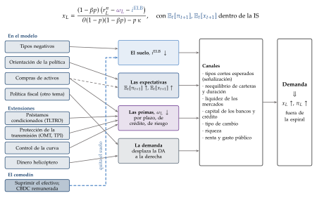
Conclusión
Recapitulación:
En conclusión, la política monetaria llega a la economía por varios canales a la vez (el tipo de interés, los precios de los activos, el tipo de cambio, el crédito y las expectativas), y llega porque hay fricciones: precios y salarios que se revisan poco a poco, y mercados financieros en los que el patrimonio importa.
Esas fricciones crean la transmisión y la amplifican, y con hogares distintos cambian a quién llega.
Cuando el tipo de interés toca su límite, el banco central actúa sobre los tipos esperados y las primas, con su palabra y con su balance.
Relevancia:
En España, con hipotecas a tipo variable y empresas que dependen de los bancos, la transmisión es más rápida y más desigual que en otros países del euro, como mostraron las subidas de 2022-2023.
Extensiones:
El diseño y los instrumentos de la política [ver tema 3.A.36]; la demanda de dinero [ver tema 3.A.35]; la nueva economía keynesiana [ver tema 3.A.7]; la eficacia desde 2008 y la política fiscal en el límite [ver tema 3.A.40]; la dominación fiscal [ver tema 3.A.39]; la inflación y la deflación [ver tema 3.A.41]; el ciclo financiero [ver tema 3.A.42]; la economía abierta [ver tema 3.B.14] [ver tema 3.B.19], y el Eurosistema [ver tema 3.B.43].
Un euro digital remunerado, si llegara, abriría un canal directo del tipo oficial al público [ver tema 3.A.36].
Opinión:
Hay consenso en que una subida inesperada baja la producción con forma de joroba y retraso, y los precios después; hay menos acuerdo sobre los canales exactos de las compras de activos, que bajaron los tipos largos pero tuvieron que ser muy grandes para mover la economía.
Idea final:
Las cosas de palacio van despacio.
La política monetaria actúa hoy sobre la economía de dentro de 2 años; por eso tiene que mirar hacia delante y ser creíble, porque, cuando el tipo de interés ya no puede bajar, su palabra es lo que le queda.
A. Anexo: las derivaciones, paso a paso
La respuesta del modelo canónico a una perturbación monetaria
Supuestos: sin perturbaciones de costes ni de demanda (\(u_t=0\), \(r^n_t=\rho\)) y \(\varepsilon_t=\rho_\varepsilon\varepsilon_{t-1}+\) una innovación de media cero, \(0\leq\rho_\varepsilon<1\).
Paso 1: la regla (7) en la IS (5): \[x_t=\mathbb{E}_t[x_{t+1}]-\frac{1}{\theta}\big(\phi_\pi\pi_t+\phi_x x_t+\varepsilon_t-\mathbb{E}_t[\pi_{t+1}]\big)\]
Paso 2: se prueba una solución proporcional a la perturbación, \(x_t=X\varepsilon_t\) y \(\pi_t=\Pi\,\varepsilon_t\) (coeficientes indeterminados, locales del anexo), con \(\mathbb{E}_t[x_{t+1}]=X\rho_\varepsilon\varepsilon_t\) y \(\mathbb{E}_t[\pi_{t+1}]=\Pi\rho_\varepsilon\varepsilon_t\).
Paso 3: la curva de Phillips (6) da \(\Pi=\beta\rho_\varepsilon\Pi+\kappa X\), es decir, \(\Pi=\kappa X/(1-\beta\rho_\varepsilon)\).
Paso 4: la IS da \(\theta(1-\rho_\varepsilon)X=-\big[(\phi_\pi-\rho_\varepsilon)\Pi+\phi_x X+1\big]\); con el paso 3, \[X\left[\theta(1-\rho_\varepsilon)+\phi_x+\frac{\kappa(\phi_\pi-\rho_\varepsilon)}{1-\beta\rho_\varepsilon}\right]=-1\ \Rightarrow\ X=-(1-\beta\rho_\varepsilon)\Lambda,\qquad \Pi=-\kappa\Lambda\] con \(\Lambda\) la de (9).
Paso 5: los tipos. De la IS, \((1-\rho_\varepsilon)x_t=-\frac1\theta(r_t-\rho)\), y por tanto \[r_t-\rho=\theta(1-\rho_\varepsilon)(1-\beta\rho_\varepsilon)\Lambda\,\varepsilon_t>0,\qquad i_t-\rho=\big[\theta(1-\rho_\varepsilon)(1-\beta\rho_\varepsilon)-\rho_\varepsilon\kappa\big]\Lambda\,\varepsilon_t\] El tipo real sube siempre; el nominal puede bajar si la perturbación es muy persistente.
Los números del texto: con \(\eta=0{,}75\) (precios que duran un año en un modelo trimestral), \(\beta=0{,}99\) y \(\theta=1\), una elasticidad de Frisch unitaria y rendimientos constantes, \(\kappa\approx0{,}17\); con \(\phi_\pi=1{,}5\), \(\phi_x=0{,}125\) y \(\rho_\varepsilon=0{,}5\), \(\Lambda\approx2{,}05\), y una perturbación de 0,25 puntos trimestrales (1 punto anual) da \(x_t\approx-0{,}26\) %, una inflación anualizada 0,35 puntos menor, un tipo real 0,52 puntos mayor y un nominal 0,34 puntos mayor. Con \(\rho_\varepsilon=0{,}8\), \(\Lambda\approx5{,}33\): el tipo real sube 0,22 puntos y el nominal baja 0,51. ∎
Los contratos de Fischer
Con \(p^*_t=p_t+a\,y_t\) y \(y_t=m_t-p_t\), el salario deseado es \(p^*_t=a\,m_t+(1-a)\,p_t\), y con \(w^j_t=\mathbb{E}_{t-j}[p^*_t]\): \[p_t=\tfrac12\Big(a\,\mathbb{E}_{t-1}[m_t]+(1-a)\,\mathbb{E}_{t-1}[p_t]+a\,\mathbb{E}_{t-2}[m_t]+(1-a)\,\mathbb{E}_{t-2}[p_t]\Big)\]
Expectativa en \(t-2\): \(\mathbb{E}_{t-2}[p_t]=a\,\mathbb{E}_{t-2}[m_t]+(1-a)\,\mathbb{E}_{t-2}[p_t]\), luego \(\mathbb{E}_{t-2}[p_t]=\mathbb{E}_{t-2}[m_t]\).
Expectativa en \(t-1\): \(\mathbb{E}_{t-1}[p_t]=\tfrac12\big(a\,\mathbb{E}_{t-1}[m_t]+(1-a)\,\mathbb{E}_{t-1}[p_t]+\mathbb{E}_{t-2}[m_t]\big)\), luego \(\mathbb{E}_{t-1}[p_t]=\dfrac{a\,\mathbb{E}_{t-1}[m_t]+\mathbb{E}_{t-2}[m_t]}{1+a}\).
Equilibrio: el precio está predeterminado (solo depende de lo que se sabía en \(t-1\) y \(t-2\)), así que \(p_t=\mathbb{E}_{t-1}[p_t]\) y \(y_t=m_t-p_t\) da (10).
La versión del artículo: con \(w^j_t=\mathbb{E}_{t-j}[p_t]\) y la oferta \(y_t=\tfrac12\sum_j(p_t-w^j_t)\), se obtiene \(\mathbb{E}_{t-2}[p_t]=\mathbb{E}_{t-2}[m_t]\), \(\mathbb{E}_{t-1}[p_t]=\tfrac23\mathbb{E}_{t-1}[m_t]+\tfrac13\mathbb{E}_{t-2}[m_t]\), \(p_t=\tfrac12m_t+\tfrac16\mathbb{E}_{t-1}[m_t]+\tfrac13\mathbb{E}_{t-2}[m_t]\) y \(y_t=\tfrac12(m_t-\mathbb{E}_{t-1}[m_t])+\tfrac13(\mathbb{E}_{t-1}[m_t]-\mathbb{E}_{t-2}[m_t])\).
La regla estabilizadora: si a la demanda se suma una perturbación que el banco central ve en \(t-1\), una regla que la compense con \(m_t\) anula el segundo término y solo queda la sorpresa del periodo. ∎
Los contratos de Taylor
Con el dinero como paseo aleatorio, \(\mathbb{E}_t[m_{t+1}]=m_t\), el salario del contrato es \(w^c_t=a\,m_t+\tfrac{1-a}{2}\big(p_t+\mathbb{E}_t[p_{t+1}]\big)\), y con \(p_t=\tfrac12(w^c_t+w^c_{t-1})\): \[w^c_t=A\big(w^c_{t-1}+\mathbb{E}_t[w^c_{t+1}]\big)+\frac{2a}{1+a}\,m_t,\qquad A\equiv\frac{1-a}{2(1+a)}\]
Se prueba \(w^c_t=\rho_w w^c_{t-1}+(1-\rho_w)m_t\). Sustituyendo, \(\rho_w\) cumple \(A\rho_w^2-\rho_w+A=0\), con raíces \([1\pm\sqrt{1-4A^2}]/(2A)\); como \(1-4A^2=4a/(1+a)^2\), la raíz estable es \[\rho_w=\frac{(1-\sqrt a)^2}{1-a}=\frac{1-\sqrt a}{1+\sqrt a}\in[0,1)\] y el término en \(m_t\) resulta ser \(1-\rho_w\).
Tras una subida del dinero de 1 en \(t=0\): \(w^c_t=1-\rho_w^{\,t+1}\), \(p_0=\tfrac12(1-\rho_w)\), \(p_t=1-\tfrac12\rho_w^{\,t}(1+\rho_w)\) y \(y_t=\tfrac12(1+\rho_w)\rho_w^{\,t}\). Con \(a=1\), \(\rho_w=0\) y el efecto dura un periodo; con \(a=0{,}1\), \(\rho_w\approx0{,}52\) y la producción es 0,76, 0,40, 0,21, 0,11… ∎
La orientación de la política en el límite inferior
Supuestos: el tipo natural es negativo hasta \(T-1\) y positivo desde \(T\); \(i^{\mathrm{ELB}}=0\); desde \(T+1\) el banco central vuelve a seguir al tipo natural, de modo que \(\mathbb{E}_T[x_{T+1}]=\mathbb{E}_T[\pi_{T+1}]=0\).
Sin orientación, en \(T\) el banco central fija \(i_T=r^n_T\) y \(x_T=\pi_T=0\); antes, en el límite, la brecha es negativa: \(x_{T-1}=\frac1\theta r^n_{T-1}<0\).
Con orientación, promete \(i_T=0\): en \(T\), \(x_T=-\frac1\theta(0-0-r^n_T)=r^n_T/\theta>0\) y \(\pi_T=\kappa\,x_T>0\). Un periodo antes, \(x_{T-1}=x_T+\frac1\theta(\pi_T+r^n_{T-1})\), mayor que sin orientación en \(\frac{r^n_T}{\theta}\big(1+\frac{\kappa}{\theta}\big)\), y lo mismo, acumulado, en cada periodo anterior: la promesa baja hoy el tipo real. ∎
B. Anexo: la evidencia empírica en detalle
La historia: Friedman y Schwartz (1963) recorren la historia monetaria de Estados Unidos de 1867 a 1960 y muestran que los cambios del dinero de origen monetario precedieron a los de la producción; la Gran Contracción de 1929-1933 sería un fracaso de la Reserva Federal [ver tema 3.A.5].
La ecuación de San Luis: Andersen y Jordan (1968) regresan, con datos trimestrales de 1952 a 1968, la variación del PNB nominal sobre las variaciones actuales y retardadas del dinero (M1 o la base) y del gasto de pleno empleo: la suma de los coeficientes del dinero es de unos 5,8 y la del gasto no es significativa. El problema es el de identificación: el dinero responde a la renta.
La causalidad de Granger: una variable causa a otra si sus valores pasados mejoran la predicción de la segunda.22 Sims (1972) encuentra que el dinero causa en ese sentido a la renta y no al revés. Pero es predicción, no causalidad: el dinero puede adelantarse a la renta porque los bancos y el banco central se anticipan a ella.
La narrativa: C. D. Romer y Romer (1989) fechan 6 episodios de posguerra en que la Reserva Federal decidió frenar la economía para bajar la inflación (octubre de 1947, septiembre de 1955, diciembre de 1968, abril de 1974, agosto de 1978 y octubre de 1979); C. D. Romer y Romer (2004) construyen una serie de sorpresas limpiando el tipo decidido de las previsiones internas de la Reserva Federal.
Los VAR: Sims (1980) propone sistemas en los que cada variable depende del pasado de todas; para identificar la política, Sims (1992) y Christiano, Eichenbaum y Evans (1996) suponen que la producción y los precios no reaccionan a ella en el mismo periodo; Sims (1992) encuentra el rompecabezas de los precios, y Christiano, Eichenbaum y Evans (1996) lo evitan añadiendo los precios de las materias primas.
La alta frecuencia: Gertler y Karadi (2015) usan las sorpresas en los futuros de tipos en los 30 minutos alrededor de cada reunión de la Reserva Federal como instrumento en un VAR mensual de 1979 a 2012, con el bono a 1 año como indicador de política: una subida sorpresa sube los diferenciales de crédito. Altavilla et al. (2019) construyen la base de sorpresas del BCE, y Jarociński y Karadi (2020) separan, por el signo de la reacción de la bolsa, las sorpresas de política de las de información; el efecto información lo habían señalado Nakamura y Steinsson (2018).
| Estudio | Método | Muestra | Efecto mínimo (%) | Mes del mínimo |
|---|---|---|---|---|
| Faust, Swanson y Wright (2004) | Alta frecuencia | 1991-2001 | \(-0{,}6\) | 10 |
| Romer y Romer (2004) | Narrativa | 1970-1996 | \(-4{,}3\) | 24 |
| Bernanke, Boivin y Eliasz (2005) | VAR con factores | 1959-2001 | \(-0{,}6\) | 18 |
| Smets y Wouters (2007) | Modelo EGDE estimado | 1966-2004 | \(-1{,}8\) | 12 |
| Boivin, Kiley y Mishkin (2010) | VAR con factores | 1962-1979 | \(-1{,}6\) | 8 |
| Boivin, Kiley y Mishkin (2010) | VAR con factores | 1984-2008 | \(-0{,}7\) | 24 |
| Coibion (2012) | Narrativa robusta | 1970-1996 | \(-2{,}0\) | 18 |
| Barakchian y Crowe (2013) | Alta frecuencia y VAR | 1988-2008 | \(-5{,}0\) | 23 |
| Gertler y Karadi (2015) | VAR con instrumentos de alta frecuencia | 1979-2012 | \(-2{,}2\) | 18 |
| Amir y Uhlig (2015) | VAR bayesiano con signos | 1960-2010 | \(-1{,}3\) | 9 |
Fuente: elaboración propia con datos de Ramey (2016, tabla 3.1). Efecto mínimo sobre la producción, normalizado a una subida máxima de 100 puntos básicos del tipo de los fondos federales; las cifras no son del todo comparables, porque la normalización no controla la persistencia de la subida.
C. Anexo: la transmisión en una economía abierta
Mundell-Fleming con 2 países grandes
Supuestos: precios fijos (sin expectativas de inflación), 2 países grandes, A y B, tipo de cambio flexible, movilidad perfecta del capital (\(\beta_K\to\infty\) en la BP, con \(\beta_K\) la sensibilidad de los flujos de capital al diferencial de tipos; 0 sería movilidad nula), activos sustitutos perfectos, expectativas estáticas del tipo de cambio y la condición de Marshall-Lerner [ver tema 3.A.32].23 El modelo es de 1962-1963 y fue la referencia de la economía abierta en los 60 y los 70.
Una expansión monetaria en A (gráfico 12): baja el tipo de A, salen capitales hacia B, la moneda de A se deprecia y la de B se aprecia; como A es grande, el tipo de interés mundial también baja.
en A, la renta sube, por el tipo y por la depreciación;
en B, la renta de A compra más importaciones de B, pero la apreciación le resta competitividad: en el caso canónico domina la apreciación y la renta de B baja. La expansión monetaria «empobrece al vecino».
El tamaño importa: cuanto menor es A, más eficaz es su política, porque el tipo mundial apenas se mueve y toda la expansión actúa por la depreciación; si A es tan grande que fija el tipo mundial, su política se parece a la de una economía cerrada (tabla 5).

| Política en A | Renta de A | Renta de B |
|---|---|---|
| Monetaria | Sube; más cuanto menor es A | Baja en el caso canónico (domina la apreciación de B) |
| Fiscal (otra exposición) | Sube; más cuanto mayor es A | Sube (efecto locomotora) [ver tema 3.B.19] |
Fuente: elaboración propia a partir de Mundell (1963) y Mundell (1964).
La nueva macroeconomía abierta: Corsetti y Pesenti
La nueva macroeconomía abierta, que inauguran Obstfeld y Rogoff (1995), lleva los modelos con rigideces nominales y agentes que optimizan a 2 países; Corsetti y Pesenti (2009) la reducen a unas pocas curvas para enseñarla como el IS-LM, y la Reserva Federal la usa en modelos como SIGMA [ver tema 3.B.19].
El gráfico (gráfico 13), en el plano del empleo, \(\ell\), y el consumo, \(C\): la demanda agregada AD es horizontal (\(C=\mu/P\), con \(\mu\) el tono de la política), la oferta AS es un rayo (\(C=Z\ell\), con \(Z\) la productividad) y NR es la vertical del empleo natural, \(\overline{\ell}\).
Panel a, economía cerrada: una subida de la productividad (\(Z\uparrow\), AS\('\)) lleva la economía de \(O\) a \(R\) si los precios son rígidos: el consumo no cambia y el empleo cae por debajo del natural (\(\ell_R\)). Si el banco central sube \(\mu\) (AD\('\)), la economía llega al equilibrio con precios flexibles, \(F\), sobre NR.
Panel b, el otro país (B) cuando A responde así y su moneda se deprecia: con precios en la moneda del productor (PCP), la relación real de intercambio de B mejora (\(\tau_B\uparrow\)), su consumo sube (AD\('_B\)) y B sigue en su empleo natural, en \(H\); con precios en la moneda del comprador (LCP), \(\tau_B\downarrow\) y B queda fuera de su empleo natural, en \(L\).
Lo que decide la transmisión es en qué moneda se fijan los precios:
si los exportadores fijan los precios en su moneda, el tipo de cambio pasa por completo a los precios de importación y reasigna el gasto entre países, como en Mundell-Fleming, y la política que replica los precios flexibles en cada país es la óptima;
si los fijan en la moneda del comprador, a corto plazo el tipo de cambio apenas mueve los precios que pagan los consumidores: cambia los márgenes de los exportadores, y aparece un dilema para la política;
si casi todo el comercio se factura en dólares, la política de la Reserva Federal mueve los precios del comercio de todos.
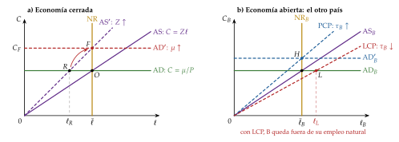
Fuente: elaboración propia a partir de Corsetti y Pesenti (2009). \(\mu\) es aquí el tono de la política monetaria, no el margen.
El ciclo financiero global
Los precios de los activos con riesgo, los flujos brutos de capital y el crédito se mueven a la vez en todo el mundo, en sentido contrario al índice de volatilidad de la bolsa estadounidense (VIX). La política de la Reserva Federal da forma a ese ciclo: una subida de sus tipos baja los precios de los activos, el apalancamiento de los bancos y el crédito en todo el mundo.
El canal no es el tipo de interés de cada país, sino los precios de los activos, el apalancamiento y la toma de riesgos; y un tipo de cambio flexible no aísla del todo: más que un trilema, un dilema entre la libre movilidad del capital y una política monetaria propia [ver tema 3.B.14]. Para la zona del euro, el BCE matiza que el motor principal es el apetito global por el riesgo y que no ha perdido el control de sus condiciones financieras.
M. M. Habib y F. Venditti, «The global financial cycle: implications for the global economy and the euro area», Boletín Económico del BCE, 6/2018: https://www.
D. Anexo: las compras de activos en los balances
Si el banco central compra un bono a un banco: en su activo entra el bono y en su pasivo aumentan las reservas de ese banco; el banco cambia un bono por reservas, y el dinero de hogares y empresas no cambia.
Si lo compra a un fondo de pensiones o a otro inversor no bancario: el banco del vendedor recibe las reservas y abona un depósito al vendedor; aumentan a la vez las reservas y los depósitos, y el inversor tiene ahora un depósito en lugar de un bono, que querrá cambiar por otros activos (el reequilibrio de carteras, III.2).
En los 2 casos, el banco central crea reservas, no préstamos: el crédito solo crece si los bancos prestan más [ver tema 3.A.36].
Para el sector público consolidado, comprar deuda larga con reservas que pagan el tipo oficial acorta el plazo de su deuda: abarata su financiación mientras los tipos están bajos y la expone a las subidas, como se vio en las pérdidas de los bancos centrales desde 2022 [ver tema 3.A.39] [ver tema 3.A.40].
La evolución de los balances (gráfico 14): crecieron con las compras de 2008-2021 y se reducen desde 2022; su análisis, por economías, es de otra exposición [ver tema 3.A.40].
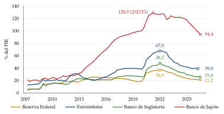
Fuente: elaboración propia con datos del BPI.
E. Anexo: aspectos para el test
Preguntas tipo test del primer ejercicio: simulador de test.
Stanley Fischer (contratos, 1977) no es Irving Fisher (ecuación de cambio, 1911; deflación por deudas, 1933).
El canal del crédito tiene 2 partes: el del préstamo bancario y el del balance; Blinder y Stiglitz (1983) son un antecedente.
La divina coincidencia: el resultado, Goodfriend y King (1997) y Rotemberg y Woodford (1997); el nombre, Blanchard y Galí (2007). La perturbación de costes en la curva de Phillips, Clarida, Galí y Gertler (1999).
Con precios a la Calvo, un precio dura de media \(1/(1-\eta)\) periodos, con \(\eta\) la probabilidad de no revisar.
Con contratos de Taylor, la persistencia es mayor cuanto mayor es la rigidez real (\(a\) pequeña, \(\rho_w\) grande).
En el modelo canónico la política llega al consumo por la sustitución intertemporal; en los HANK, sobre todo por la renta y el empleo. La política monetaria redistribuye, pero no es el mejor instrumento para redistribuir.
Wallace (1981): sin fricciones, las compras de activos son irrelevantes.
La paradoja de la orientación: en el modelo, una promesa lejana tiene tanto efecto como una cercana.
El límite inferior no es exactamente cero: el BCE llegó al \(-0{,}50\) %; por debajo del tipo de reversión, bajar más puede contraer el crédito.
Gertler y Karadi (2015) usan datos de Estados Unidos; para el BCE, Altavilla et al. (2019) y Jarociński y Karadi (2020).
Bibliografía
La escribió en forma algebraica Newcomb (1885), como «ecuación de cambio».↩︎
Para Kaldor (1982) y Moore (1988), los bancos crean dinero al prestar y el banco central fija el tipo de interés y facilita las reservas que se le piden: la oferta de dinero es horizontal al tipo oficial [ver tema 3.A.4]. Los bancos centrales describen hoy así su funcionamiento: los préstamos crean los depósitos, y no al revés [ver tema 3.A.36].↩︎
Premio Nobel: Milton Friedman (1976), «por sus logros en los campos del análisis del consumo, la historia y la teoría monetarias, y por su demostración de la complejidad de la política de estabilización».↩︎
Es la regla del \(k\) %, que no debe confundirse con la regla de Friedman de un tipo nominal nulo [ver tema 3.A.41].↩︎
Premio Nobel: Robert Lucas (1995), «por haber desarrollado y aplicado la hipótesis de las expectativas racionales, transformando así el análisis macroeconómico y profundizando en nuestra comprensión de la política económica».↩︎
Solow (1956) y Swan (1956), con un ahorro fijo; Cass (1965) y Koopmans (1965), con la optimización de Ramsey (1928); Kydland y Prescott (1982) añaden la oferta de trabajo y las perturbaciones tecnológicas. Son economías sin dinero: para estudiar la política monetaria hay que darle una función [ver tema 3.A.35]. Premios Nobel: Koopmans (1975), «por sus contribuciones a la teoría de la asignación óptima de recursos»; Solow (1987), «por sus contribuciones a la teoría del crecimiento económico»; Kydland y Prescott (2004), «por sus contribuciones a la macroeconomía dinámica: la consistencia temporal de la política económica y las fuerzas que impulsan los ciclos económicos».↩︎
Es la hipótesis de las expectativas con prima, en logaritmos; la prima por plazo va sin letra.↩︎
Premios Nobel: James Tobin (1981), «por su análisis de los mercados financieros y de sus relaciones con las decisiones de gasto, el empleo, la producción y los precios»; Franco Modigliani (1985), «por sus análisis pioneros del ahorro y de los mercados financieros».↩︎
Premio Nobel: Thomas Sargent y Christopher Sims (2011), «por su investigación empírica sobre la causa y el efecto en la macroeconomía».↩︎
La regla responde a la inflación con \(\phi_\pi>1\), para que el tipo real suba cuando sube la inflación y el equilibrio sea único (el principio de Taylor), y a la brecha con \(\phi_x\geq0\). La original de Taylor (1993) es \(i_t=1+1{,}5\,\pi_t+0{,}5\,x_t\), en puntos porcentuales anuales [ver tema 3.A.36].↩︎
Es una lectura a la Wicksell: la política es expansiva si el tipo real que fija está por debajo del natural y contractiva si está por encima; por eso el modelo se llama también neowickselliano [ver tema 3.A.3].↩︎
Stanley Fischer (1943-2025), que fue gobernador del Banco de Israel y vicepresidente de la Reserva Federal, no es Irving Fisher (1867-1947), el de la ecuación de cambio y de la deflación por deudas.↩︎
La \(a\) es local: es la sensibilidad del salario deseado a la producción, la misma idea que la \(\chi\) de Ball y Romer en el tema de la nueva economía keynesiana [ver tema 3.A.7]; no es la pendiente de la curva de Phillips, que no sale en este apartado.↩︎
En el artículo original la oferta sale de la demanda de trabajo: \(w^j_t=\mathbb{E}_{t-j}[p_t]\) y \(y_t=\tfrac12\sum_{j=1,2}(p_t-w^j_t)\), con lo que \(y_t=\tfrac12(m_t-\mathbb{E}_{t-1}[m_t])+\tfrac13(\mathbb{E}_{t-1}[m_t]-\mathbb{E}_{t-2}[m_t])\). La conclusión es la misma (anexo A).↩︎
Con contratos a la Calvo, en los que cada periodo se revisa al azar una fracción \(1-\eta\) de los precios, el nivel de precios cumple \(p_t=\lambda\,p_{t-1}+(1-\lambda)\,m_t\), con \(\lambda\) (local) la raíz menor de \(\beta\lambda^2-\big(1+\beta+\tfrac{(1-\eta)(1-\beta\eta)}{\eta}\,a\big)\lambda+1=0\), y la producción es \(y_k=\lambda^{k+1}\): sin escalón y sin el arranque por debajo de 1 de Taylor, cae de forma geométrica desde el primer periodo. Con la misma duración media de 2 periodos (\(\eta=0{,}5\)), sin descuento (\(\beta=1\)) y \(a=0{,}1\), \(\lambda=0{,}8\) y la producción es 0,80, 0,64, 0,51, 0,41…: dura más que con Taylor, porque algunos precios tardan mucho en revisarse.↩︎
Premio Nobel: Merton Miller (1990), con Harry Markowitz y William Sharpe, «por sus trabajos pioneros en la teoría de la economía financiera»; el de Modigliani, en el apartado I.2.↩︎
En el modelo canónico todos se endeudan y prestan al mismo tipo, el que fija el banco central más la inflación esperada: no hay bancos, ni primas de riesgo, ni quiebras.↩︎
Premio Nobel: Ben Bernanke (2022), con Douglas Diamond y Philip Dybvig, «por sus investigaciones sobre los bancos y las crisis financieras».↩︎
Premio Nobel: Joseph Stiglitz (2001), con George Akerlof y Michael Spence, «por sus análisis de los mercados con información asimétrica».↩︎
Premio Nobel: Paul Krugman (2008), «por su análisis de los patrones del comercio y de la localización de la actividad económica».↩︎
Para ver. Khan Academy explica la expansión cuantitativa en «Quantitative easing», «More on quantitative easing (and credit easing)» y «US and Japanese quantitative easing».↩︎
Premio Nobel: Clive Granger (2003), con Robert Engle, «por sus métodos de análisis de series temporales económicas con tendencias comunes (cointegración)».↩︎
Premio Nobel: Robert Mundell (1999), «por su análisis de la política monetaria y fiscal con distintos regímenes cambiarios y su análisis de las áreas monetarias óptimas».↩︎